1。TensorFlow机器学习简介
活动1.01:在TensorFlow中执行张量加法
解决方案:
- 导入张量流库:
import tensorflow as tf
- 使用TensorFlow的
Variable类:var1 = tf.Variable(2706, tf.int32) var2 = tf.Variable(2386, tf.int32)
创建两个等级为0的张量 - Create a new variable to add the two scalars created and print the result:
var_sum = var1 + var2 var_sum.numpy()
这将导致以下输出:
5092
该输出显示了
Product A在Location X的总收入。 - 使用TensorFlow的
Variable类:scalar1 = tf.Variable(95, tf.int32) vector1 = tf.Variable([2706, 2799, 5102], \ tf.int32)
创建两个张量，一个秩为0的标量和一个秩为1的向量 - Create a new variable as the sum of the scalar and vector created and print the result:
vector_scalar_sum = scalar1 + vector1 vector_scalar_sum.numpy()
这将导致以下输出:
array([2801, 2894, 5197])
结果是
Salesperson 1在Location X的新销售目标。 - 现在使用TensorFlow的
Variable类:matrix1 = tf.Variable([[2706, 2799, 5102], \ [2386, 4089, 5932]], tf.int32) matrix2 = tf.Variable([[5901, 1208, 645], \ [6235, 1098, 948]], tf.int32) matrix3 = tf.Variable([[3908, 2339, 5520], \ [4544, 1978, 4729]], tf.int32)
创建三个等级为2的张量，代表每个产品、销售人员和位置的收入 - Create a new variable as the sum of the three tensors created and print the result:
matrix_sum = matrix1 + matrix2 + matrix3 matrix_sum.numpy()
这将导致以下输出:
图1.42:矩阵求和作为一个NumPy变量的输出
结果表示每个位置的每个产品的总收入。
在本练习中，您对秩为0、1和2的张量进行了加法运算，并展示了标量(秩为0的张量)可以与其他秩的张量相加，称为标量加法。
活动1.02:在TensorFlow中执行张量整形和变换
解决方案:
- 导入张量流库:
import tensorflow as tf
- Create a one-dimensional array with 24 elements using TensorFlow's
Variableclass. Verify the shape of the matrix:array1 = tf.Variable([*range(24)]) array1.shape.as_list()
这将导致以下输出:
[24]
- Reshape the matrix so that it has 12 rows and 2 columns using TensorFlow's
reshapefunction. Verify the shape of the new matrix:reshape1 = tf.reshape(array1, shape=[12, 2]) reshape1.shape.as_list()
这将导致以下输出:
[12, 2]
- Reshape the matrix so that it has a shape of
3x4x2using TensorFlow'sreshapefunction. Verify the shape of the new matrix:reshape2 = tf.reshape(array1, shape=[3, 4, 2]) reshape2.shape.as_list()
这将导致以下输出:
[3, 4, 2]
- Verify that the rank of this new tensor is of rank
3by using TensorFlow'srankfunction:tf.rank(reshape2).numpy()
这将导致以下输出:
3
- Transpose the tensor created in step 3. Verify the shape of the new tensor:
transpose1 = tf.transpose(reshape1) transpose1.shape.as_list()
这将导致以下输出:
[2, 12]
在本练习中，您已经练习了对不同秩的张量执行张量整形和变换，并学习了如何通过整形张量来改变张量的秩。您使用TensorFlow的reshape和transpose函数模拟了将24名学生分组到不同规模的班级项目中。
活动1.03:应用激活功能
解决方案:
- 导入张量流库:
import tensorflow as tf
- 创建一个
3x4张量作为输入，其中的行代表各销售代表的销售额，列代表经销商处现有的各种车辆，值代表与MSRP的平均百分比差异。这些值可以是正数，也可以是负数，这取决于销售人员的销售价格是高于还是低于建议零售价:input1 = tf.Variable([[-0.013, 0.024, 0.06, 0.022], \ [0.001, -0.047, 0.039, 0.016], \ [0.018, 0.030, -0.021, -0.028]], \ tf.float32)
- 创建一个
4x1weights张量，形状为4x1，代表汽车的建议零售价:weights = tf.Variable([[19995.95], [24995.50], \ [36745.50], [29995.95]], \ tf.float32)
- 创建大小为
3x1的偏差张量，表示与每个销售人员相关的固定成本:bias = tf.Variable([[-2500.0],[-2500.0],[-2500.0]], \ tf.float32)
- Matrix multiply the input by the weight to show the average deviation from the MSRP on all cars and add the bias to subtract the fixed costs of the salesperson:
output = tf.matmul(input1,weights) + bias output
以下是输出:
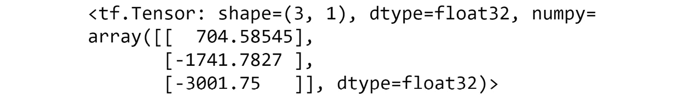图1.43:矩阵乘法的输出
- Apply a ReLU activation function to highlight the net-positive salespeople:
output = tf.keras.activations.relu(output) output
这将导致以下输出:
图1.44:应用激活功能后的输出
此结果显示销售人员的净销售额为正的结果；那些净销售额为负的被归零。
在本练习中，您对各种大小的张量执行了张量乘法、张量加法，还应用了激活函数。您首先定义了张量，然后对其中两个进行矩阵乘法，然后添加一个偏差张量，最后对结果应用一个激活函数。
2。加载和处理数据
活动2.01:加载表格数据并使用最小最大缩放器重新缩放数值字段
解决方案:
- 打开一个新的Jupyter笔记本来执行此活动。将文件另存为
Activity2-01.ipnyb。 - 在一个新的Jupyter笔记本单元格中，导入熊猫库，如下:
import pandas as pd
- Create a new pandas DataFrame named
dfand read theBias_correction_ucl.csvfile into it. Examine whether your data is properly loaded by printing the resultant DataFrame:df = pd.read_csv('Bias_correction_ucl.csv')注意
确保根据CSV文件在系统上的位置更改其路径(突出显示)。如果您从存储CSV文件的同一个目录运行Jupyter笔记本，那么您可以不做任何修改就运行前面的代码。
- 使用
drop方法放下date柱。因为要删除列，所以将1传递给axis参数，将True传递给inplace参数:df.drop('Date', inplace=True, axis=1) - Plot a histogram of the
Present_Tmaxcolumn that represents the maximum temperature across dates and weather stations across the dataset:ax = df['Present_Tmax'].hist(color='gray') ax.set_xlabel("Normalized Temperature") ax.set_ylabel("Frequency")输出如下所示:
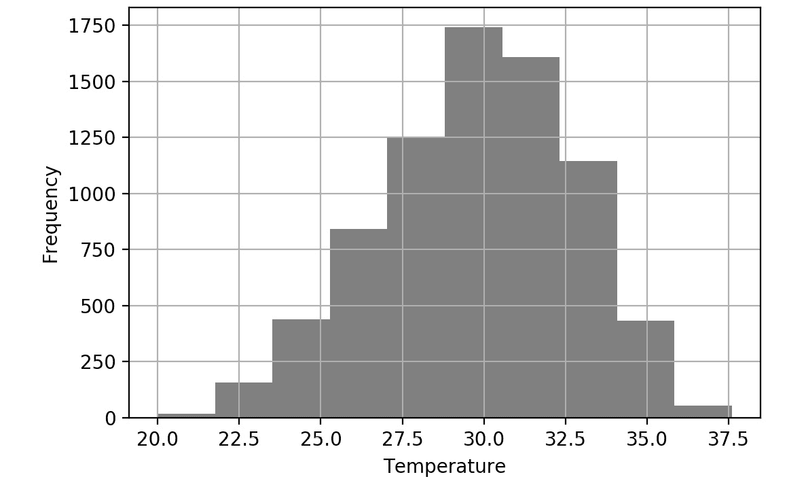图2.20:Present _ Tmax列的温度与频率直方图
生成的直方图显示了
Present_Tmax列的值的分布。 - 导入
MinMaxScaler并使用它来拟合和转换特征数据帧:from sklearn.preprocessing import MinMaxScaler scaler = MinMaxScaler() df2 = scaler.fit_transform(df) df2 = pd.DataFrame(df2, columns=df.columns)
- Plot a histogram of the transformed
Present_Tmaxcolumn:ax = df2['Present_Tmax'].hist(color='gray') ax.set_xlabel("Normalized Temperature") ax.set_ylabel("Frequency")输出如下所示:
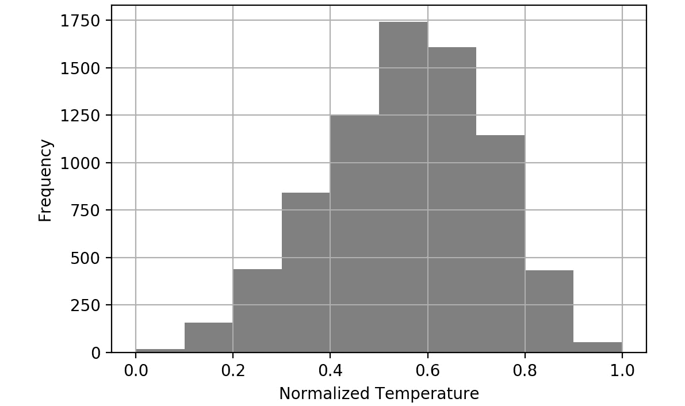
图2.21:重新调整后的Present_Tmax列的直方图
结果直方图显示温度值范围从0到1，如直方图的 x 轴上的范围所示。通过使用MinMaxScaler，这些值将始终具有最小值0和最大值1。
在本练习中，您已经对数值字段进行了一些进一步的预处理。这里，您缩放了数值字段，使它们具有最小值0和最大值1。如果数值场不是正态分布的，这可能比标准定标器更有利。它还确保生成的字段限制在最小值和最大值之间。
活动2.02:加载图像数据进行批处理
解决方案:
- 打开一个新的Jupyter笔记本来执行此活动。将文件另存为
Activity2-02.ipnyb。 - 在一个新的Jupyter笔记本单元格中，从Keras的预处理包
from tensorflow.keras.preprocessing.image \ import ImageDataGenerator
中导入ImageDataGenerator类 - 实例化
ImageDataGenerator类并传递值为1/255的rescale参数来转换图像值，使它们在0和1之间:train_datagen = ImageDataGenerator(rescale = 1./255,\ shear_range = 0.2,\ rotation_range= 180,\ zoom_range = 0.2,\ horizontal_flip = True)
- 使用数据生成器的
flow_from_directory方法将数据生成器指向图像数据。传入目标尺寸、批量尺寸和分类模式的参数:training_set = train_datagen.flow_from_directory\ ('image_data',\ target_size = (64, 64),\ batch_size = 25,\ class_mode = 'binary') - 创建一个函数来显示批处理中的图像:
import matplotlib.pyplot as plt def show_batch(image_batch, label_batch):\ lookup = {v: k for k, v in training_set.class_indices.items()} label_batch = [lookup[label] for label in \ label_batch] plt.figure(figsize=(10,10)) for n in range(25): ax = plt.subplot(5,5,n+1) plt.imshow(image_batch[n]) plt.title(label_batch[n].title()) plt.axis('off') - Take a batch from the data generator and pass it to the function to display the images and their labels:
image_batch, label_batch = next(training_set) show_batch(image_batch, label_batch)
输出如下所示:
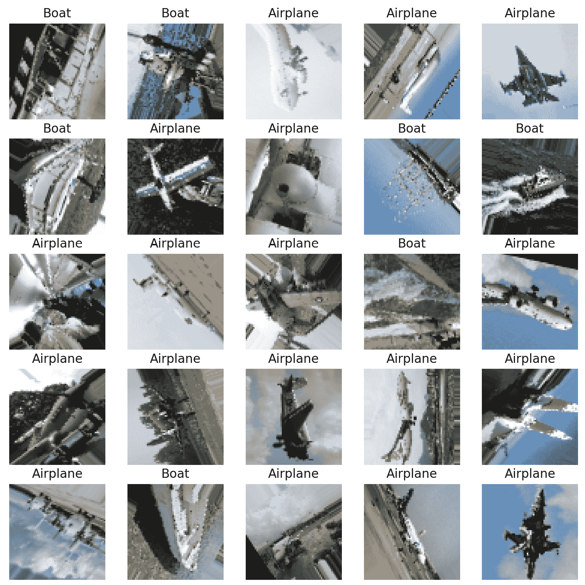
图2.22:来自一批的增强图像
输出显示了一批25个图像和它们各自的标签，它们已经通过旋转、缩放和剪切得到了增强。增强图像显示相同的对象，但具有不同的像素值，这有助于创建更鲁棒的模型。
活动2.03:加载音频数据进行批处理
解决方案:
- 打开一个新的Jupyter笔记本来执行此活动。将文件另存为
Activity2-03.ipnyb。 - 在一个新的Jupyter笔记本单元格中，导入TensorFlow和
os库:import tensorflow as tf import os
- 分别使用TensorFlow的
read_file函数和decode_wav函数创建一个加载并返回音频文件的函数。返回合成张量的转置:def load_audio(file_path, sample_rate=44100): # Load audio at 44.1kHz sample-rate audio = tf.io.read_file(file_path) audio, sample_rate = tf.audio.decode_wav\ (audio,\ desired_channels=-1,\ desired_samples=sample_rate) return tf.transpose(audio)
- 使用
os.list_dir:prefix = " ../Datasets/data_speech_commands_v0.02"\ "/zero/" paths = [os.path.join(prefix, path) for path in \ os.listdir(prefix)]
将音频数据的路径作为列表载入 - 使用您在步骤2 中创建的函数创建一个函数，该函数将获取一个数据集对象，混洗它，并加载音频。然后，将绝对值和
log1p函数应用于数据集。该函数将1加到每个值上，然后取对数。接下来，重复数据集对象，对其进行批处理，并使用与批处理大小相等的缓冲区大小预取它:def prep_ds(ds, shuffle_buffer_size=1024, \ batch_size=16): # Randomly shuffle (file_path, label) dataset ds = ds.shuffle(buffer_size=shuffle_buffer_size) # Load and decode audio from file paths ds = ds.map(load_audio) # Take the absolute value ds = ds.map(tf.abs) # Apply log1p function ds = ds.map(tf.math.log1p) # Repeat dataset forever ds = ds.repeat() # Prepare batches ds = ds.batch(batch_size) # Prefetch ds = ds.prefetch(buffer_size=batch_size) return ds
- 使用TensorFlow的
from_tensor_slices函数创建一个数据集对象，并传入音频文件的路径。然后，将您在步骤5 中创建的函数应用到数据集对象:ds = tf.data.Dataset.from_tensor_slices(paths) train_ds = prep_ds(ds)
- Take the first batch of the dataset and print it out:
for x in train_ds.take(1):\ print(x)输出将如下所示:
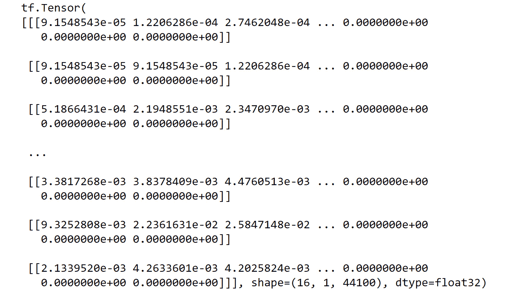图2.23:一批音频数据
输出以张量形式显示第一批MFCC频谱值。
- Plot the first audio file from the batch:
import matplotlib.pyplot as plt plt.plot(x[0,:,:].numpy().T, color = 'gray') plt.xlabel('Sample') plt.ylabel('Value'))输出将如下所示:
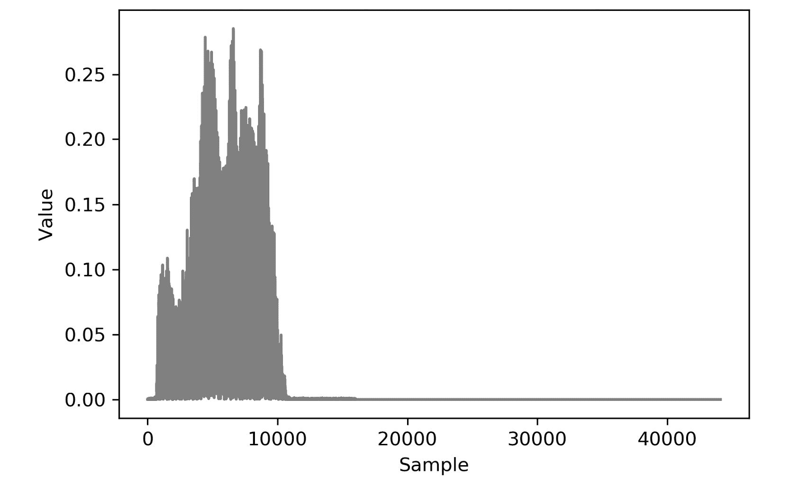
图2.24:一批预处理音频数据的可视化表示
前面的图显示了预处理的音频数据。您可以看到这些值是非负的，最小值为0，并且数据是对数标度的。
3。张量流发展
活动3.01:使用张量板可视化张量变换
解决方案:
- 导入TensorFlow库并设置种子:
import tensorflow as tf tf.random.set_seed(42)
- 设置日志目录并初始化一个文件写入器对象来写入跟踪:
logdir = 'logs/' writer = tf.summary.create_file_writer(logdir)
- 创建一个张量流函数，将两个张量相乘，并使用
ones_like函数将值1添加到结果张量中的所有元素，以创建一个与矩阵乘法结果形状相同的张量。然后，对张量的每个值应用sigmoid函数:@tf.function def my_func(x, y): r1 = tf.matmul(x, y) r2 = r1 + tf.ones_like(r1) r3 = tf.keras.activations.sigmoid(r2) return r3
- 创建两个形状为
5x5x5:x = tf.random.uniform((5, 5, 5)) y = tf.random.uniform((5, 5, 5))
的张量 - 打开图形跟踪:
tf.summary.trace_on(graph=True, profiler=True)
- 将函数应用于两个张量，并将轨迹导出到日志目录:
z = my_func(x, y) with writer.as_default(): tf.summary.trace_export(name="my_func_trace",\ step=0,\ profiler_outdir=logdir)
- Launch TensorBoard in the command line and view the graph in a browser:
tensorboard --logdir=./logs
您应该会看到类似下图的内容:
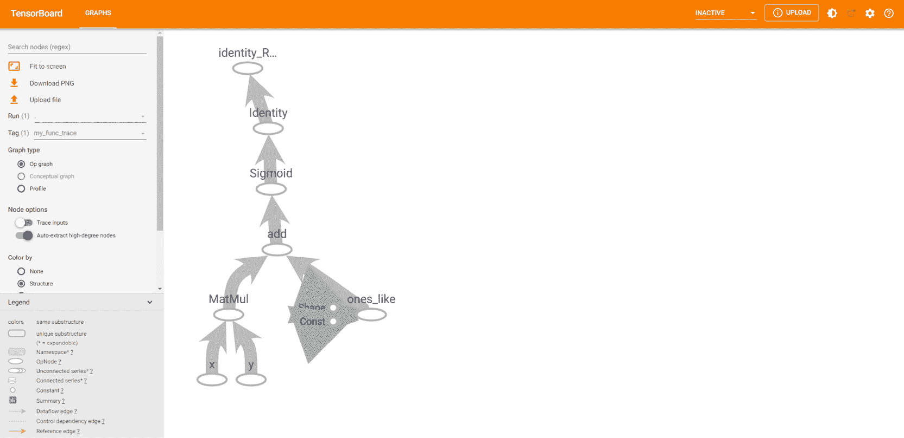
图3.19:张量板中张量变换的可视化表示
结果表示为张量变换创建的图形。您可以在图形开始的左下方看到，名为x的张量和名为MatMul的节点上的y执行了矩阵乘法。右下角是使用ones_like功能创建的张量。输入节点表示张量的形状和值，该值是一个常数值。在创建两个张量时，它们被输入到表示加法函数的节点，之后输出被输入到表示sigmoid函数的应用的节点。最终节点代表输出张量的创建。
在本练习中，您创建了张量变换的函数，然后在TensorBoard中演示了变换的可视化表示。
活动3.02:从TensorFlow Hub的预训练模型中执行单词嵌入
解决方案:
- Import TensorFlow and TensorFlow Hub and print the version of the library:
import tensorflow as tf import tensorflow_hub as hub print('TF version: ', tf.__version__) print('HUB version: ', hub.__version__)你应该得到TensorFlow和TensorFlow Hub的版本。
图3.20:Google Colab中TensorFlow和TensorFlow Hub版本的输出
- 设置通用语句编码器模块的句柄:
module_handle ="https://tfhub.dev/google"\ "/universal-sentence-encoder/4"
- 使用TensorFlow Hub
KerasLayer类创建一个Hub层，并传入以下参数:module_handle、input_shape和dtype:hub_layer = hub.KerasLayer(module_handle, input_shape=[],\ dtype=tf.string)
- 创建一个包含要用编码器编码的字符串的列表:
text = ['The TensorFlow Workshop']
- Apply
hub_layerto the text to embed the sentence as a vector:hub_layer(text)
您应该得到以下输出:
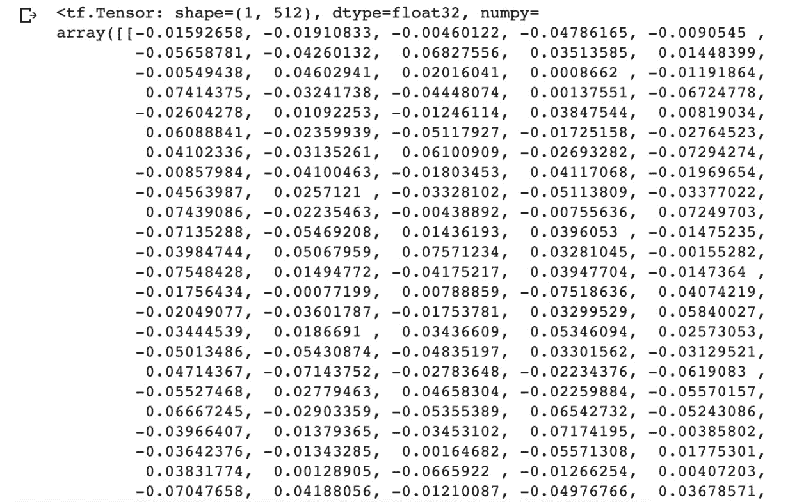
图3.21:嵌入向量的输出
在这里，您可以看到文本已经被转换为512维的嵌入向量。嵌入向量是一维张量，它将文本映射为连续变量的向量，如上图所示。
在本活动中，您使用Google Colab环境从TensorFlow Hub下载了一个模型。你用一个通用的句子编码器将一个句子嵌入到一个512维的向量中。这项活动表明，通过强大的远程服务器上的几行代码，您可以访问任何应用程序的最先进的机器学习模型。
4。回归和分类模型
活动4.01:使用TensorFlow创建多层人工神经网络
解决方案:
- 打开一个新的Jupyter笔记本来执行此活动。
- 导入TensorFlow和pandas库:
import tensorflow as tf import pandas as pd
- Load in the dataset using the pandas
read_csvfunction:df = pd.read_csv('superconductivity.csv')注意
确保根据CSV文件在系统上的位置更改其路径(突出显示)。如果您从存储CSV文件的同一个目录运行Jupyter笔记本，那么您可以不做任何修改就运行前面的代码。
- 删除
date列，并删除所有包含空值的行:df.dropna(inplace=True)
- 创建目标和要素数据集:
target = df['critical_temp'] features = df.drop('critical_temp', axis=1) - 重新缩放要素数据集:
from sklearn.preprocessing import StandardScaler scaler = StandardScaler() feature_array = scaler.fit_transform(features) features = pd.DataFrame(feature_array, columns=features.columns)
- 初始化
Sequential类的Keras模型:model = tf.keras.Sequential()
- 使用模型的
add方法向模型添加输入图层，并将input_shape设置为要素数据集中的列数。在第一个具有ReLU激活功能的模型上添加四个大小为64、32、16、8的隐藏层，然后添加一个单位为model.add(tf.keras.layers.InputLayer\ (input_shape=features.shape[1],), \ name='Input_layer')) model.add(tf.keras.layers.Dense(64, activation='relu', \ name='Dense_layer_1')) model.add(tf.keras.layers.Dense(32, name='Dense_layer_2')) model.add(tf.keras.layers.Dense(16, name='Dense_layer_3')) model.add(tf.keras.layers.Dense(8, name='Dense_layer_4')) model.add(tf.keras.layers.Dense(1, name='Output_layer'))
的输出层 - 用RMSprop优化器编译模型，学习率等于
0.001，损失的均方误差为model.compile(tf.optimizers.RMSprop(0.001), loss='mse')
- 创建张量板回调:
tensorboard_callback = tf.keras.callbacks\ .TensorBoard(log_dir="./logs")
- Fit the model to the training data for
100epochs, with a batch size equal to32and a validation split equal to 20%:model.fit(x=features.to_numpy(), y=target.to_numpy(), \ epochs=100, callbacks=[tensorboard_callback], \ batch_size=32, validation_split=0.2)您应该得到以下输出:
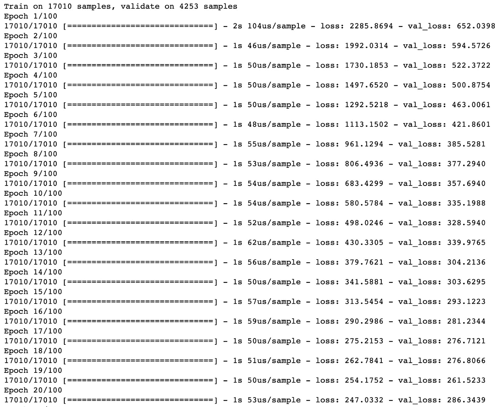图4.16:拟合过程的输出，显示了时期、每个样本的训练时间以及每个时期后的损失
- Evaluate the model on the training data:
loss = model.evaluate(features.to_numpy(), target.to_numpy()) print('loss:', loss)这将导致以下输出:
loss: 165.735601268987
- Visualize the model architecture and model-fitting process in TensorBoard by calling the following on the command line:
tensorboard –-logdir=logs/
模型架构应该如下所示:
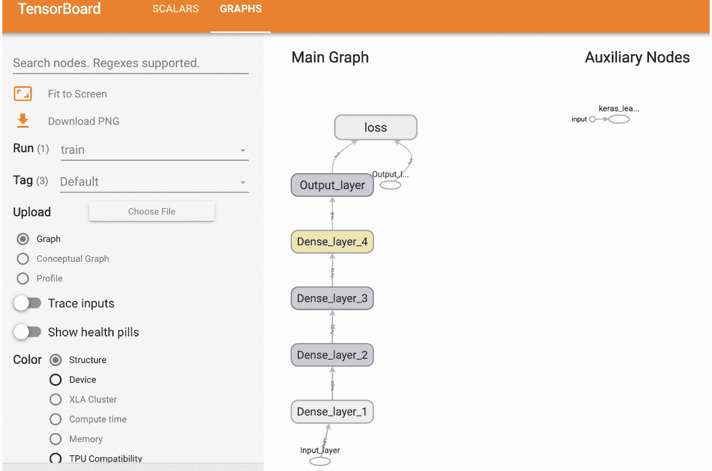图4.17:tensor board中模型架构的可视化表示
- 在TensorBoard中可视化模型拟合过程。您应该得到以下输出: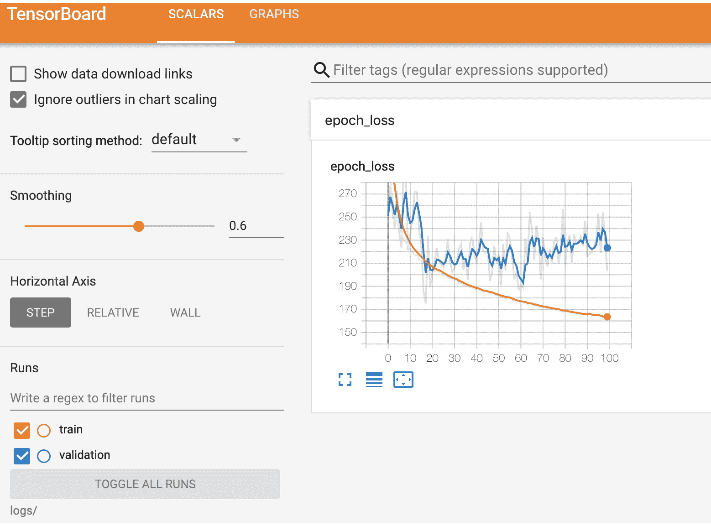
图4.18:在TensorBoard中，作为训练和验证分割的历元函数的损失的可视化表示
在模型拟合过程中，在每个时期后计算训练和验证集的损失，并显示在SCALARS选项卡的TensorBoard中。从TensorBoard中，您可以看到，在训练集的每个历元后，均方误差持续降低，但在验证集上保持平稳。
在本活动中，您进一步练习了在TensorFlow中构建模型，以及在TensorBoard中查看其架构和培训流程。在本节中，您已经学习了如何使用TensorFlow为回归任务构建、训练和评估人工神经网络。您使用了Dense类的Keras层作为一种简单的方法来创建完全连接的层，这些层在层的输出上包含激活功能。可以简单地通过在层中传递所需数量的单元来创建层。Keras配置权重和偏差的初始化，以及机器学习工作流中常见的任何其他附加参数。
活动4.02:使用TensorFlow创建多层分类人工神经网络
解决方案:
- 打开一个新的Jupyter笔记本来执行此活动。
- 导入TensorFlow和pandas库:
import tensorflow as tf import pandas as pd
- Load in the dataset using the pandas
read_csvfunction:df = pd.read_csv('superconductivity.csv')注意
确保根据CSV文件在系统上的位置更改其路径(突出显示)。如果您从存储CSV文件的同一个目录运行Jupyter笔记本，那么您可以不做任何修改就运行前面的代码。
- 删除任何具有空值的行:
df.dropna(inplace=True)
- 当
critical_temp栏的值高于77.36时，将目标值设置为true，低于false时，将目标值设置为false。特征数据集是数据集中剩余的列:target = df['critical_temp'].apply(lambda x: 1 if x>77.36 else 0) features = df.drop('critical_temp', axis=1) - 重新缩放要素数据集:
from sklearn.preprocessing import StandardScaler scaler = StandardScaler() feature_array = scaler.fit_transform(features) features = pd.DataFrame(feature_array, columns=features.columns)
- 初始化
Sequential类的Keras模型:model = tf.keras.Sequential()
- 使用模型的
add方法向模型添加输入图层，并将input_shape设置为要素数据集中的列数。向模型添加三个尺寸为32、16和8的隐藏层，然后添加一个具有1单位和一个sigmoid激活函数的输出层:model.add(tf.keras.layers.InputLayer\ (input_shape=features.shape[1], \ name='Input_layer')) model.add(tf.keras.layers.Dense(32, name='Hidden_layer_1')) model.add(tf.keras.layers.Dense(16, name='Hidden_layer_2')) model.add(tf.keras.layers.Dense(8, name='Hidden_layer_3')) model.add(tf.keras.layers.Dense(1, name='Output_layer', \ activation='sigmoid'))
- 用RMSprop优化器编译模型，学习率等于
0.0001和损失的二进制交叉熵，并计算准确性度量:model.compile(tf.optimizers.RMSprop(0.0001), \ loss= 'binary_crossentropy', metrics=['accuracy'])
- 创建张量板回调:
tensorboard_callback = tf.keras.callbacks.TensorBoard\ (log_dir="./logs")
- Fit the model to the training data for
50epochs and a validation split equal to 20%:model.fit(x=features.to_numpy(), y=target.to_numpy(),\ epochs=50, callbacks=[tensorboard_callback],\ validation_split=0.2)您应该得到以下输出:

图4.19:拟合过程的输出，显示了历元、每个样本的训练时间、损失和每个历元后的准确度，并在验证分割上进行评估
- Evaluate the model on the training data:
loss, accuracy = model.evaluate(features.to_numpy(), \ target.to_numpy()) print(f'loss: {loss}, accuracy: {accuracy}')这将显示以下输出:
loss: 0.21984571637242145, accuracy: 0.8893383145332336
- Visualize the model architecture and model-fitting process in TensorBoard by calling the following on the command line:
tensorboard –-logdir=logs/
您应该会在浏览器中看到类似如下的屏幕:

图4.20:tensor board中模型架构的可视化表示
损失函数可以如下所示:
图4.21:作为TensorBoard中训练和验证分割的历元函数的精确度和损失的直观表示
在模型拟合过程中，在每个历元后计算训练和验证集的准确度和损失，并显示在SCALARS选项卡的TensorBoard中。从TensorBoard中，您可以看到损失度量(二进制交叉熵)在训练集上的每个历元后持续降低，但在验证集上保持平稳。
在本练习中，您已经在TensorFlow中通过构建多层人工神经网络来练习构建分类模型，以确定材料在高于或低于氮的沸点时是否会表现出超导性。此外，您使用TensorBoard查看模型的架构，并在训练过程中监控关键指标，包括模型的损失和准确性。
5。分类模型
活动5.01: Bu 用TensorFlow建立一个字符识别模型
解决方案:
- 打开新的Jupyter笔记本。
- 导入熊猫库并使用
pd作为别名:import pandas as pd
- 创建一个名为
file_url的变量，包含数据集的URL:file_url = 'https://raw.githubusercontent.com/PacktWorkshops'\ '/The-TensorFlow-Workshop/master/Chapter05'\ '/dataset/letter-recognition.data'
- Load the dataset into a
DataFrame()function calleddatausingread_csv()method, provide the URL to the CSV file, and setheader=Noneas the dataset doesn't provide column names. Print the first five rows usinghead()method.data = pd.read_csv(file_url, header=None) data.head()
预期产出如下:
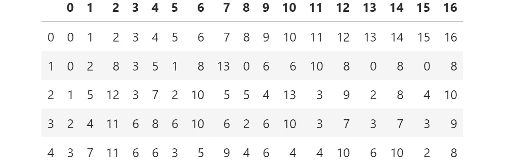图5.42:数据的前五行
您可以看到数据集包含
17列，它们都是数字。列0是target变量，每个值对应字母表中的一个字母。 - 使用
pop()方法提取目标变量(列0，并将其保存在名为target:target = data.pop(0)
的变量中 - 通过保留前15000个观察值，将
data分割成一个训练集，并保存在一个名为X_train的变量中。对target执行相同的分割，并将前15000个案例保存在名为y_train:X_train = data[:15000] y_train = target[:15000]
的变量中 - 通过保留最后5000次观察将
data分割成一个测试集，并保存在一个名为X_test的变量中。对target执行相同的分割，并将最后5000个案例保存在一个名为y_test:X_test = data[15000:] y_test = target[15000:]
的变量中 - 导入TensorFlow库并使用
tf作为别名:import tensorflow as tf
- 使用
tf.random.set_seed()将种子设置为8以获得可重复的结果:tf.random.set_seed(8)
- 使用
tf.keras.Sequential()实例化一个顺序模型，并将其存储在一个名为model:model = tf.keras.Sequential()
的变量中 - 从
tensorflow.keras.layers:from tensorflow.keras.layers import Dense
导入Dense()类 - 使用
Dense()创建一个由512个单元组成的全连接图层，并将ReLu指定为激活函数，将输入形状指定为(16,)，这对应于数据集中的要素数量。将它保存在一个名为fc1:fc1 = Dense(512, input_shape=(16,), activation='relu')
的变量中 - 用
Dense()创建一个全连接的512单元层，并将ReLu指定为激活函数。将其保存在一个名为fc2:fc2 = Dense(512, activation='relu')
的变量中 - 用
Dense()创建一个全连接的128单元层，并将ReLu指定为激活函数。将其保存在名为fc3:fc3 = Dense(128, activation='relu')
的变量中 - 用
Dense()创建一个全连接的128单元层，并指定ReLu为激活函数。将其保存在一个名为fc4:fc4 = Dense(128, activation='relu')
的变量中 - 用
Dense()创建一个完全连接的26单元层，并将softmax指定为激活函数。将其保存在一个名为fc5:fc5 = Dense(26, activation='softmax')
的变量中 - 使用
add()方法依次添加所有五个完全连接的层到模型中。model.add(fc1) model.add(fc2) model.add(fc3) model.add(fc4) model.add(fc5)
- Print the summary of the model using
summary()method.model.summary()
预期产出如下:
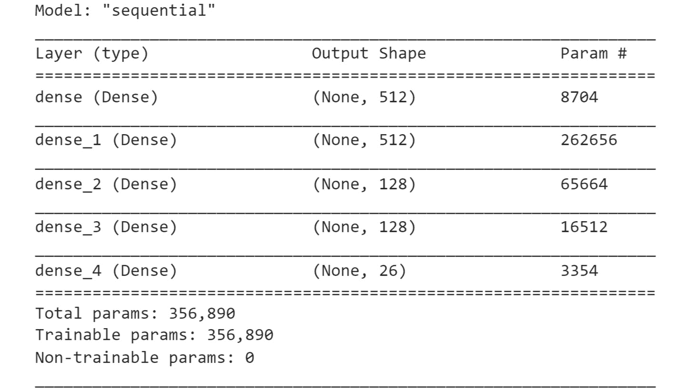图5.43:模型架构概要
前面的输出显示了您的模型中有五个层(如预期的那样),并告诉您每个层的参数数量。
- 将
tf.keras.losses中的SparseCategoricalCrossentropy()实例化并保存在一个名为loss:loss = tf.keras.losses.SparseCategoricalCrossentropy()
的变量中 - 将
tf.keras.optimizers中的Adam()实例化为0.001作为学习率，并保存在一个名为optimizer:optimizer = tf.keras.optimizers.Adam(0.001)
的变量中 - 使用
compile()方法编译模型，指定您刚刚创建的优化器和损耗参数，并使用准确性作为要报告的度量:model.compile(optimizer=optimizer, loss=loss, \ metrics=['accuracy'])
- Start the model training process using
fit()method on the training set for five epochs:model.fit(X_train, y_train, epochs=5)
预期产出如下:
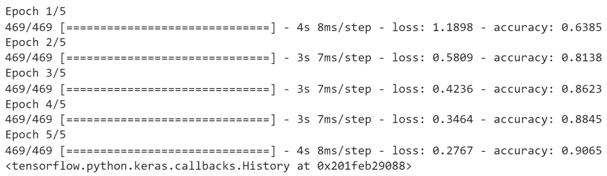图5.44:培训过程的日志
前面的输出显示了模型训练期间每个时期的日志。注意，处理单个历元花费了大约2秒，并且准确度分数从
0.6229(第一历元)增加到0.9011(第五历元)。 - Evaluate the performance of the model on the test set using
evaluate()method.model.evaluate(X_test, y_test)
预期产出如下:
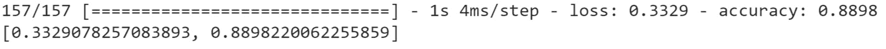图5.45:模型在测试集上的表现
- 使用
predict()方法预测测试集上每个类别的概率。保存在一个名为preds_proba:preds_proba = model.predict(X_test)
的变量中 - 使用带有
axis=1:preds = preds_proba.argmax(axis=1)
的argmax()方法将类别概率转换成单一预测值 - 从
tensorflow.math进口confusion_matrix:from tensorflow.math import confusion_matrix
- Print the confusion matrix on the test set:
confusion_matrix(y_test, preds)
预期产出如下:
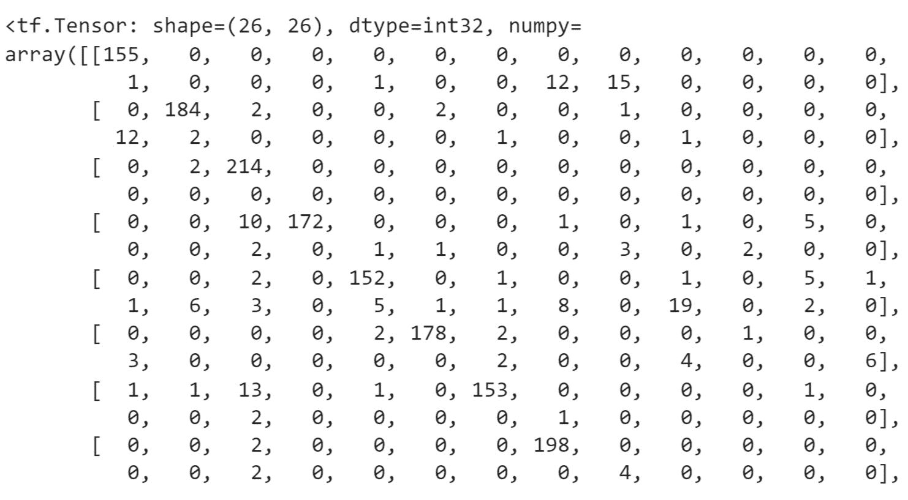
图5.46:测试集的混淆矩阵
前面的输出显示模型在大多数情况下正确预测了字母表中的26个字母(大多数值位于对角线上)。它在训练集和测试集上都取得了大约0.89的准确率。本活动结束了多类分类部分。在前面的部分中，您将看到另一种称为多标签的分类。
活动5.02:用TensorFlow标记模型，构建电影类型
解决方案:
- 打开新的Jupyter笔记本。
- 导入熊猫库并使用
pd作为别名:import pandas as pd
- 创建一个名为
feature_url的变量，包含数据集的URL:feature_url = 'https://raw.githubusercontent.com'\ '/PacktWorkshops'/The-TensorFlow-Workshop'\ '/master/Chapter05'/dataset/IMDB-F-features.csv'
- Load the dataset into a DataFrame called
featureusingread_csv()method and provide the URL to the CSV file. Print the first five rows using thehead()method:feature = pd.read_csv(feature_url) feature.head()
预期产出如下:
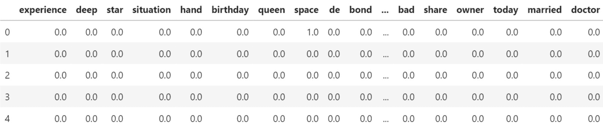图5.47:特征的前五行
- 创建一个名为
target_url的变量，包含数据集的URL:target_url = 'https://raw.githubusercontent.com'\ '/PacktWorkshops/The-TensorFlow-Workshop'\ '/master/Chapter05'/dataset/IMDB-F-targets.csv'
- Load the dataset into a DataFrame called
targetusingread_csv()method and provide the URL to the CSV file. Print the first five rows using thehead()method:target = pd.read_csv(target_url) target.head()
预期产出如下:
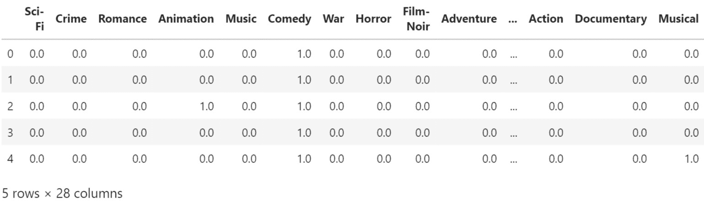图5.48:目标的前五行
- 通过保留前15，000个观察值，将数据分成一个训练集，并将其保存在一个名为
X_train的变量中。对target执行相同的分割，并将前15000个案例保存在名为y_train:X_train = feature[:15000] y_train = target[:15000]
的变量中 - 通过保留最近的5000次观察将数据分割成一个测试集，并保存在一个名为
X_test的变量中。对target执行相同的分割，并将最后5000个案例保存在名为y_test:X_test = feature[15000:] y_test = target[15000:]
的变量中 - 导入TensorFlow库，使用
tf作为别名:import tensorflow as tf
- 使用
tf.random.set_seed()将tensorflow的种子设置为8。这将有助于获得可重复的结果:tf.random.set_seed(8)
- 使用
tf.keras.Sequential()实例化一个顺序模型，并将其存储在一个名为model:model = tf.keras.Sequential()
的变量中 - 从
tensorflow.keras.layers:from tensorflow.keras.layers import Dense
导入Dense()类 - 使用
Dense()创建一个由512个单元组成的全连接图层，并将ReLu指定为激活函数，将输入形状指定为(1001,)，这与数据集中的要素数量相对应。将它保存在一个名为fc1:fc1 = Dense(512, input_shape=(1001,), activation='relu')
的变量中 - 用
Dense()创建一个全连接的512单元层，并将ReLu指定为激活函数。将其保存在一个名为fc2:fc2 = Dense(512, activation='relu')
的变量中 - 用
Dense()创建一个全连接的128单元层，并将ReLu指定为激活函数。将其保存在名为fc3:fc3 = Dense(128, activation='relu')
的变量中 - 用
Dense()创建一个全连接的128单元层，并指定ReLu为激活函数。将其保存在一个名为fc4:fc4 = Dense(128, activation='relu')
的变量中 - 用
Dense()创建一个完全连接的28单元层，并将sigmoid指定为激活函数。将其保存在一个名为fc5:fc5 = Dense(28, activation='sigmoid')
的变量中 - 使用
add()方法依次添加所有五个完全连接的层到模型中。model.add(fc1) model.add(fc2) model.add(fc3) model.add(fc4) model.add(fc5)
- Print the summary of the model using
summary()method.model.summary()
预期产出如下:

图5.49:模型架构概要
- 将
tf.keras.losses中的BinaryCrossentropy()实例化并保存在一个名为loss:loss = tf.keras.losses.BinaryCrossentropy()
的变量中 - 将
tf.keras.optimizers中的Adam()实例化为0.001作为学习率，并保存在一个名为optimizer:optimizer = tf.keras.optimizers.Adam(0.001)
的变量中 - 使用
compile()方法编译模型，并指定刚刚创建的优化器和损耗参数，精确度作为要报告的度量:model.compile(optimizer=optimizer, loss=loss, \ metrics=['accuracy'])
- Start the model training process using the
fit()method on the training set for20epochs:model.fit(X_train, y_train, epochs=20)
预期产出如下:
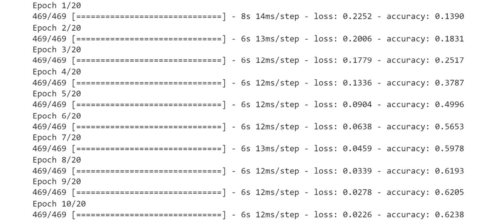图5.50:培训过程的日志
您可以观察到，该模型经过20个历元的训练，精确度正在提高，在第九个历元后达到
61.67%。 - Evaluate the performance of the model on the test set using the
evaluate()method:model.evaluate(X_test, y_test)
预期产出如下:
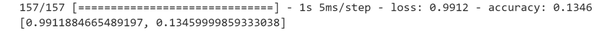
图5.51:模型在测试集上的表现
前面的输出显示，该模型在测试集上获得了一个非常低的准确度分数0.13，而在训练集上获得了一个准确度分数0.62。该模型正在努力学习相关模式以正确预测不同类型的电影。你可以自己尝试不同的架构和不同数量的隐藏层和单元。也可以尝试不同的学习速率和优化器。由于训练集和测试集上的分数非常不同，该模型过度拟合，并且简单地学习了仅与训练集相关的模式。
6。正则化和超参数调整
活动6.01:使用L1和L2正则项预测收入
解决方案:
- 打开新的Jupyter笔记本。
- 导入熊猫库，使用
pd作为别名:import pandas as pd
- 创建一个名为
usecols的列表，包含列名AAGE、ADTIND、ADTOCC、SEOTR、WKSWORK和PTOTVAL:usecols = ['AAGE','ADTIND','ADTOCC','SEOTR','WKSWORK', 'PTOTVAL']
- 创建一个名为
train_url的变量，其中包含训练集的URL:train_url = 'https://raw.githubusercontent.com/PacktWorkshops'\ '/The-TensorFlow-Workshop/master/Chapter06'\ '/dataset/census-income-train.csv'
- Load the training dataset into a DataFrame,
train_data, using theread_csv()method. Provide the URL to the CSV file and theusecolslist to theusecolsparameter. Print the first five rows using thehead()method:train_data = pd.read_csv(train_url, usecols=usecols) train_data.head()
预期产出如下:

图6.23:训练集的前五行
- 使用
pop()方法提取目标变量(PTOTVAL，并保存在一个名为train_target:train_target = train_data.pop('PTOTVAL')的变量中 - 创建一个名为
test_url的变量，它包含测试集的URL:test_url = 'https://github.com/PacktWorkshops'\ '/The-TensorFlow-Workshop/blob/master/Chapter06'\ '/dataset/census-income-test.csv?raw=true'
- Load the test dataset into a DataFrame,
X_test, using theread_csv()method. Provide the URL to the CSV file and theusecolslist to theusecolsparameter. Print the first five rows using thehead()method:test_data = pd.read_csv(test_url, usecols=usecols) test_data.head()
预期产出如下:
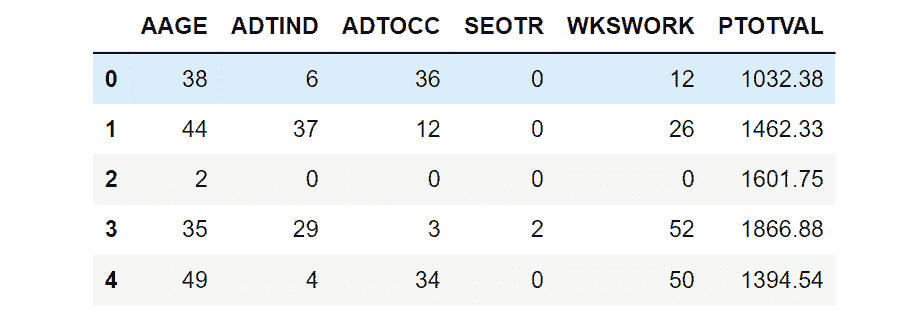图6.24:测试集的前五行
- 使用
pop()方法提取目标变量(PTOTVAL)并保存在名为test_target:test_target = test_data.pop('PTOTVAL')的变量中 - 导入TensorFlow库并使用
tf作为别名。然后，从tensorflow.keras.layers:import tensorflow as tf from tensorflow.keras.layers import Dense
导入Dense类 - 使用
tf.random.set_seed()将种子设置为8以获得可重复的结果:tf.random.set_seed(8)
- 使用
tf.keras.Sequential()实例化一个顺序模型，并将其存储在一个名为model:model = tf.keras.Sequential()
的变量中 - 从
tensorflow.keras.layers:from tensorflow.keras.layers import Dense
导入Dense类 - 使用
Dense()创建一个由1048个单元组成的全连接图层，并将ReLu指定为激活函数，将输入形状指定为(5,)，这对应于数据集中的要素数量。将它保存在一个名为fc1:fc1 = Dense(1048, input_shape=(5,), activation='relu')
的变量中 - 用
Dense()创建三层完全连接的512、128和64单元，并指定ReLu为激活函数。保存在三个变量中，分别叫做fc2、fc3和fc4:fc2 = Dense(512, activation='relu') fc3 = Dense(128, activation='relu') fc4 = Dense(64, activation='relu')
- 用
Dense()创建一个由三个单元(对应于类的数量)组成的全连接层，并将softmax指定为激活函数。将其保存在一个名为fc5:fc5 = Dense(3, activation='softmax')
的变量中 - 用
Dense()创建单个单元的全连接层。将其保存在一个名为fc5:fc5 = Dense(1)
的变量中 - 使用
add()方法:model.add(fc1) model.add(fc2) model.add(fc3) model.add(fc4) model.add(fc5)
将所有五个完全连接的层依次添加到模型中 - Print the summary of the model:
model.summary()
您将获得以下输出:
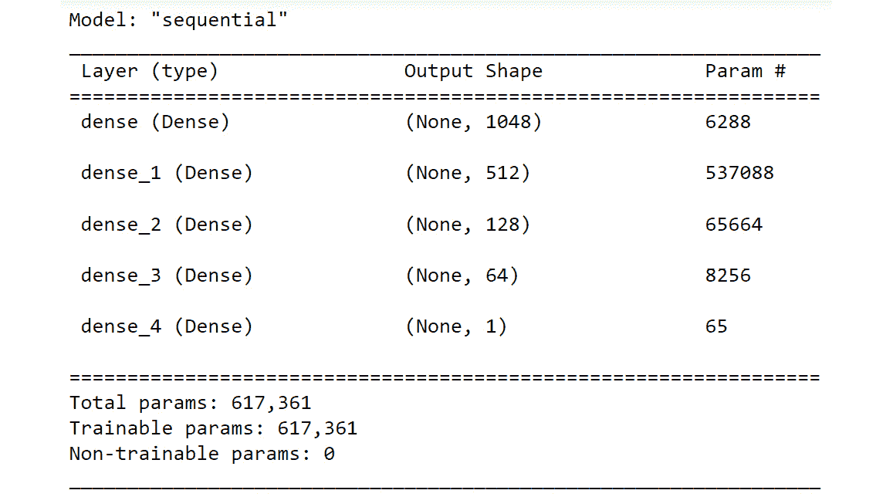图6.25:模型架构概要
- 用
0.05作为学习率实例化tf.keras.optimizers中的Adam()，并保存在一个名为optimizer:optimizer = tf.keras.optimizers.Adam(0.05)
的变量中 - 编译模型，指定优化器，设置
mse为要显示的损耗和度量:model.compile(optimizer=optimizer, loss='mse', metrics=['mse'])
- Start the model training process using the
fit()method for five epochs and split the data into a validation set with 20% of the data:model.fit(train_data, train_target, epochs=5, \ validation_split=0.2)预期产出如下:
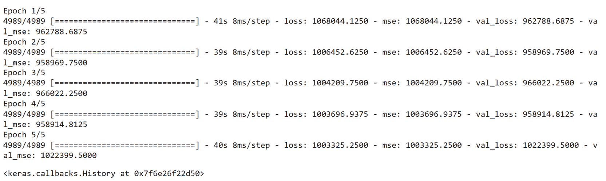图6.26:培训过程的日志
前面的输出显示模型过度拟合。它在训练集上获得了
1005740的MSE分数，而在验证集上仅获得了1070237的MSE分数。现在，用L1和L2正则化训练另一个模型。 - 创建五个与之前模型相似的全连接层，并为
kernel_regularizer参数指定L1和L2正则化子。使用值0.001作为正则因子。保存到五个变量中，分别叫做reg_fc1、reg_fc2、reg_fc3、reg_fc4和reg_fc5:reg_fc1 = Dense(1048, input_shape=(5,), activation='relu', \ kernel_regularizer=tf.keras.regularizers\ .l1_l2(l1=0.001, l2=0.001)) reg_fc2 = Dense(512, activation='relu', \ kernel_regularizer=tf.keras.regularizers\ .l1_l2(l1=0.001, l2=0.001)) reg_fc3 = Dense(128, activation='relu', \ kernel_regularizer=tf.keras.regularizers\ .l1_l2(l1=0.001, l2=0.001)) reg_fc4 = Dense(64, activation='relu', \ kernel_regularizer=tf.keras.regularizers\ .l1_l2(l1=0.001, l2=0.001)) reg_fc5 = Dense(1, activation='relu')
- 使用
tf.keras.Sequential()实例化一个顺序模型，将其存储在一个名为model2的变量中，并使用add()方法将所有五个完全连接的层顺序添加到模型中:model2 = tf.keras.Sequential() model2.add(reg_fc1) model2.add(reg_fc2) model2.add(reg_fc3) model2.add(reg_fc4) model2.add(reg_fc5)
- Print the summary of the model:
model2.summary()
输出如下所示:
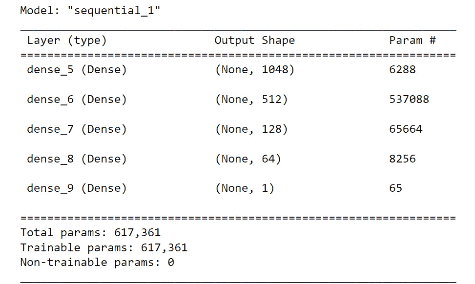图6.27:模型架构概要
- 使用
compile()方法编译模型，指定优化器，并将mse设置为要显示的损失和度量:optimizer = tf.keras.optimizers.Adam(0.1) model2.compile(optimizer=optimizer, loss='mse', metrics=['mse'])
- Start the model training process using the
fit()method for five epochs and split the data into a validation set with 20% of the data:model2.fit(train_data, train_target, epochs=5, \ validation_split=0.2)输出如下所示:
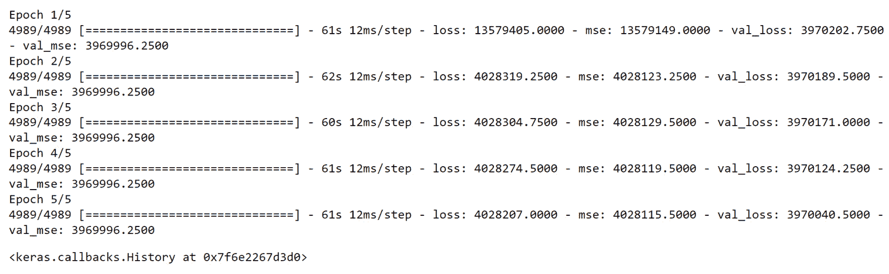
图6.28:培训过程的日志
通过添加L1和L2正则化，该模型在训练(4028182)和测试(3970020)集之间具有相似的准确度分数。因此，模型并没有过度拟合。
活动6.02:使用Keras Tuner的贝叶斯优化预测收入
解决方案:
- 打开新的Jupyter笔记本。
- 导入熊猫库并使用
pd作为别名:import pandas as pd
- 创建一个名为
usecols的列表，包含以下列名:AAGE、ADTIND、ADTOCC、SEOTR、WKSWORK和PTOTVAL:usecols = ['AAGE','ADTIND','ADTOCC','SEOTR','WKSWORK', 'PTOTVAL']
- 创建一个名为
train_url的变量，其中包含训练集的URL:train_url = 'https://raw.githubusercontent.com/PacktWorkshops'\ '/The-TensorFlow-Workshop/master/Chapter06'\ '/dataset/census-income-train.csv'
- 使用
read_csv()方法将训练数据集加载到名为train_data的数据帧中，并向usecols参数提供CSV文件的URL和usecols列表。使用head()方法打印前五行:train_data = pd.read_csv(train_url, usecols=usecols) train_data.head()
- You will get the following output: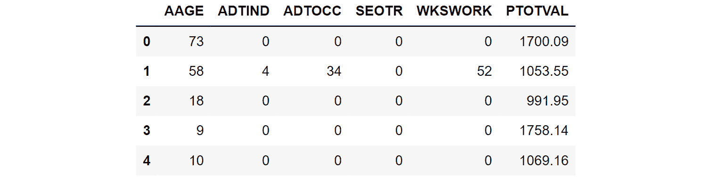
图6.29:训练集的前五行
- 使用
pop()方法提取目标变量(PTOTVAL，并保存在一个名为train_target:train_target = train_data.pop('PTOTVAL')的变量中 - 创建一个名为
test_url的变量，它包含测试集的URL:test_url = 'https://github.com/PacktWorkshops'\ '/The-TensorFlow-Workshop/blob/master/Chapter06'\ '/dataset/census-income-test.csv?raw=true'
- Load the test dataset into a DataFrame called
X_testusing theread_csv()method and provide the URL to the CSV file and theusecolslist to theusecolsparameter. Print the first five rows using thehead()method:test_data = pd.read_csv(test_url, usecols=usecols) test_data.head()
输出如下所示:
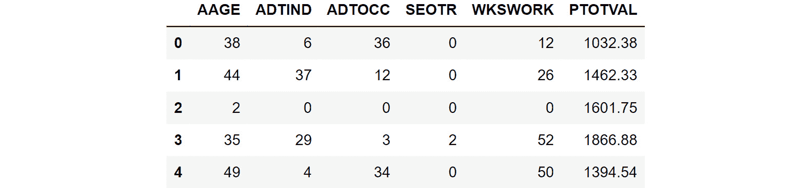图6.30:测试集的前五行
- 使用
pop()方法提取目标变量(PTOTVAL，并保存在一个名为test_target:test_target = test_data.pop('PTOTVAL')的变量中 - 导入TensorFlow库并使用
tf作为别名。然后，从tensorflow.keras.layers:import tensorflow as tf from tensorflow.keras.layers import Dense
导入Dense类 - 使用
tf.random.set_seed()将种子设置为8以获得可重复的结果:tf.random.set_seed(8)
- 定义一个名为
model_builder的函数，创建一个与活动6.01 、使用L1和L2正则化因子预测收入的序列模型。但是这一次，提供一个超参数，hp.Choice用于学习率，hp.Int用于输入层的单元数，hp.Choice用于L2正则化:def model_builder(hp): model = tf.keras.Sequential() hp_l2 = hp.Choice('l2', values = [0.1, 0.01, 0.001]) hp_units = hp.Int('units', min_value=128, max_value=512, step=64) reg_fc1 = Dense(hp_units, input_shape=(5,), activation='relu', \ kernel_regularizer=tf.keras.regularizers\ .l2(l=hp_l2)) reg_fc2 = Dense(512, activation='relu', \ kernel_regularizer=tf.keras.regularizers\ .l2(l=hp_l2)) reg_fc3 = Dense(128, activation='relu', \ kernel_regularizer=tf.keras.regularizers\ .l2(l=hp_l2)) reg_fc4 = Dense(128, activation='relu', \ kernel_regularizer=tf.keras.regularizers\ .l2(l=hp_l2)) reg_fc5 = Dense(1) model.add(reg_fc1) model.add(reg_fc2) model.add(reg_fc3) model.add(reg_fc4) model.add(reg_fc5) hp_learning_rate = hp.Choice('learning_rate', \ values = [0.01, 0.001]) optimizer = tf.keras.optimizers.Adam(hp_learning_rate) model.compile(optimizer=optimizer, loss='mse', metrics=['mse']) return model - 安装
keras-tuner包，然后导入并给它分配kt别名:!pip install keras-tuner import kerastuner as kt
- 实例化一个
BayesianOptimization调谐器，将val_mse分配给objective，将10分配给max_trials:tuner = kt.BayesianOptimization(model_builder, \ objective = 'val_mse', \ max_trials = 10)
- 在训练和测试集上使用
search()启动超参数搜索:tuner.search(train_data, train_target, \ validation_data=(test_data, test_target))
- 用
get_best_hyperparameters()提取最佳超参数组合(索引0)并保存在一个名为best_hps:best_hps = tuner.get_best_hyperparameters()[0]
的变量中 - Extract the best value for the number of units for the input layer, save it in a variable called
best_units, and print its value:best_units = best_hps.get('units') best_units您将获得以下输出:
128
Hyperband找到的输入层单元数的最佳值是
128。 - Extract the best value for the learning rate, save it in a variable called
best_lr, and print its value:best_lr = best_hps.get('learning_rate') best_lrHyperband找到的学习率超参数的最佳值是
0.001:0.001
- 提取L2正则化的最佳值，保存在名为
best_l2的变量中，并打印其值:best_l2 = best_hps.get('l2') best_l2 - Hyperband找到的学习率超参数的最佳值是
0.001:0.001
- Start the model training process using the
fit()method for five epochs and use the test set forvalidation_data:model = tuner.hypermodel.build(best_hps) model.fit(X_train, y_train, epochs=5, \ validation_data=(X_test, y_test))您应该会得到类似如下的输出:
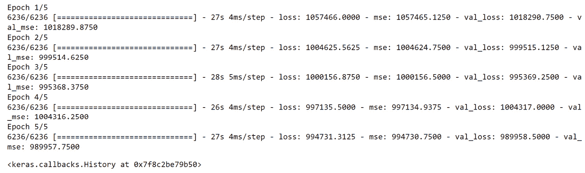
图6.31:培训过程的日志
通过贝叶斯优化，您找到了输入图层单元数量(128)、学习率(0.001)和L2正则化(0.001)的超参数的最佳组合。有了这些超参数，最终模型在训练集和测试集上分别获得了994174和989335的MSE分数。这是对活动6.01 、用L1和L2正则化子预测收入的一个很大的改进，模型并没有过度拟合太多。
7。卷积神经网络
活动7.01:构建具有更多人工神经网络层的CNN
解决方案:
有几种可能的方法来解决这一活动。以下步骤描述了其中一种方法，类似于本章前面对CIFAR-10数据集使用的方法:
- 开始一个新的Jupyter笔记本。
- 导入张量流库:
import tensorflow as tf
- 导入所需的附加库:
import numpy as np import matplotlib.pyplot as plt import tensorflow as tf import tensorflow_datasets as tfds from tensorflow.keras.layers import Input, Conv2D, Dense, Flatten, \ Dropout, Activation, Rescaling from tensorflow.keras.models import Model from sklearn.metrics import confusion_matrix, ConfusionMatrixDisplay
- Load the
CIFAR-100dataset directly fromtensorflow_datasetsand view its properties:(c100_train_dataset, c100_test_dataset), \ dataset_info = tfds.load('cifar100',\ split = ['train', 'test'],\ data_dir = 'content/Cifar100/',\ shuffle_files = True,\ as_supervised = True,\ with_info = True) assert isinstance(c100_train_dataset, tf.data.Dataset) image_shape = dataset_info.features["image"].shape print(f'Shape of Images in the Dataset: \t{image_shape}') num_classes = dataset_info.features["label"].num_classes print(f'Number of Classes in the Dataset: \t{num_classes}') names_of_classes = dataset_info.features["label"].names print(f'Names of Classes in the Dataset: \t{names_of_classes}\n') print(f'Total examples in Train Dataset: \ \t{len(c100_train_dataset)}') print(f'Total examples in Test Dataset: \ \t{len(c100_test_dataset)}')这将产生以下输出:
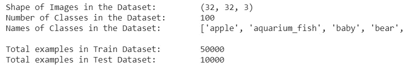图7.42:CIFAR-100数据集的属性
- 使用重缩放图层来重缩放图像。然后，通过重新缩放、缓存、混排、批处理和预取图像来构建测试和训练数据管道:
normalization_layer = Rescaling(1./255) c100_train_dataset = c100_train_dataset.map\ (lambda x, y: (normalization_layer(x), y), \ num_parallel_calls = \ tf.data.experimental.AUTOTUNE) c100_train_dataset = c100_train_dataset.cache() c100_train_dataset = c100_train_dataset.shuffle\ (len(c100_train_dataset)) c100_train_dataset = c100_train_dataset.batch(32) c100_train_dataset = c100_train_dataset.prefetch(tf.data.experimental.AUTOTUNE) c100_test_dataset = c100_test_dataset.map\ (lambda x, y: (normalization_layer(x), y), \ num_parallel_calls = \ tf.data.experimental.AUTOTUNE) c100_test_dataset = c100_test_dataset.cache() c100_test_dataset = c100_test_dataset.batch(128) c100_test_dataset = \ c100_test_dataset.prefetch(tf.data.experimental.AUTOTUNE)
- 使用函数API建立模型:
input_layer = Input(shape=image_shape) x = Conv2D(filters = 32, kernel_size = \ (3, 3), strides=2)(input_layer) x = Activation('relu')(x) x = Conv2D(filters = 64, kernel_size = (3, 3), strides=2)(x) x = Activation('relu')(x) x = Conv2D(filters = 128, kernel_size = (3, 3), strides=2)(x) x = Activation('relu')(x) x = Flatten()(x) x = Dropout(rate = 0.5)(x) x = Dense(units = 1024)(x) x = Activation('relu')(x) x = Dropout(rate = 0.2)(x) x = Dense(units = num_classes)(x) output = Activation('softmax')(x) c100_classification_model = Model(input_layer, output) - Compile and fit the model:
c100_classification_model.compile(\ optimizer='adam', \ loss='sparse_categorical_crossentropy', \ metrics = ['accuracy'], loss_weights = None, \ weighted_metrics = None, run_eagerly = None, \ steps_per_execution = None ) history = c100_classification_model.fit\ (c100_train_dataset, \ validation_data=c100_test_dataset, \ epochs=15)输出如下图所示:
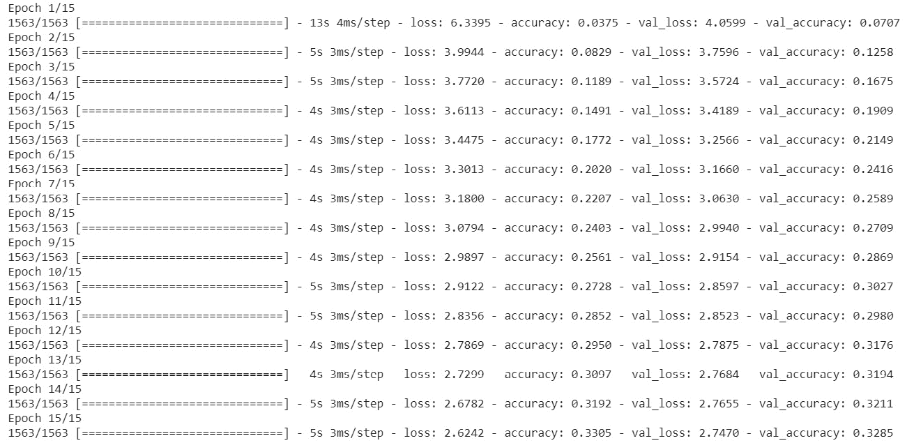图7.43:模型拟合
- Plot the loss and accuracy by using the following code:
def plot_trend_by_epoch(tr_values, val_values, title): epoch_number = range(len(tr_values)) plt.plot(epoch_number, tr_values, 'r') plt.plot(epoch_number, val_values, 'b') plt.title(title) plt.xlabel('epochs') plt.legend(['Training '+title, 'Validation '+title]) plt.figure() hist_dict = history.history tr_loss, val_loss = hist_dict['loss'], \ hist_dict['val_loss'] plot_trend_by_epoch(tr_loss, val_loss, "Loss") tr_accuracy, val_accuracy = hist_dict['accuracy'], \ hist_dict['val_accuracy'] plot_trend_by_epoch(tr_accuracy, val_accuracy, "Accuracy")损失图如下所示:
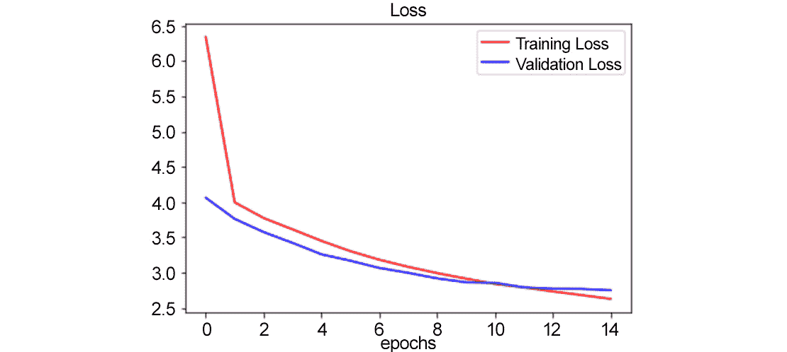图7.44:损失图
准确度图如下所示:
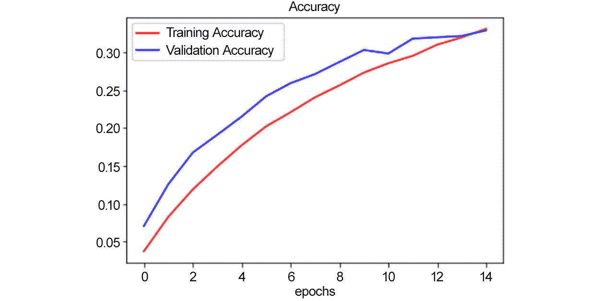图7.45:精度图
- Display a misclassified example. Use the following code:
test_labels = [] test_images = [] for image, label in tfds.as_numpy(c100_test_dataset.unbatch()): test_images.append(image) test_labels.append(label) test_labels = np.array(test_labels) predictions = c100_classification_model.predict\ (c100_test_dataset).argmax(axis=1) incorrect_predictions = np.where(predictions != test_labels)[0] index = np.random.choice(incorrect_predictions) plt.imshow(test_images[index]) print(f'True label: {names_of_classes[test_labels[index]]}') print(f'Predicted label: {names_of_classes[predictions[index]]}')这将产生以下输出:
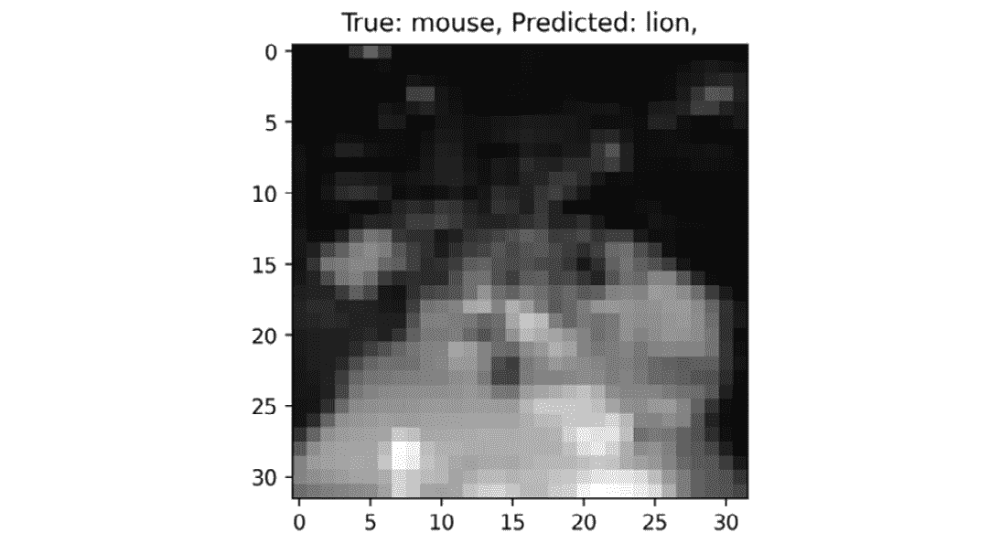
图7.46:错误分类示例
输出显示了一个错误分类的例子:预测值是lion，而真实值是mouse。在本练习中，班级数量为100，这比练习7.05 、构建CNN 中仅有10个班级要困难得多。然而，您可以看到，在15个时期之后，精确度继续增加，即使在验证数据集上，损失也继续减少。如果您让模型训练更多的时期，那么您可以期待更好的模型性能。
8。预训练网络
活动8.01:带有微调的水果分类
解决方案:
- 打开新的Jupyter笔记本。
- 将TensorFlow库导入为
tf:import tensorflow as tf
- 创建一个名为
file_url的变量，包含一个到数据集的链接:file_url = 'https://github.com/PacktWorkshops/'\ 'The-TensorFlow-Workshop/blob/master'\ '/Chapter08/dataset/fruits360.zip'
- 使用带有
'fruits360.zip'、origin=file_url和extract=True作为参数的tf.keras.get_file下载数据集，并将结果保存到名为zip_dir:zip_dir = tf.keras.utils.get_file('fruits360.zip', \ origin=file_url, extract=True)的变量中 - 导入
pathlib库:import pathlib
- 使用
pathlib.Path(zip_dir).parent:path = pathlib.Path(zip_dir).parent / 'fruits360_filtered'
创建一个名为path的变量，包含到fruits360_filtered目录的完整路径 - 创建两个名为
train_dir和validation_dir的变量，这两个变量分别采用火车(Training)和验证(Test)文件夹的完整路径:train_dir = path / 'Training' validation_dir = path / 'Test'
- 创建两个名为
total_train和total_val的变量，用于获取训练集和验证集的图像数量:total_train = 11398 total_val = 4752
- 从
tensorflow.keras.preprocessing进口ImageDataGenerator:from tensorflow.keras.preprocessing.image import ImageDataGenerator
- 创建一个名为
train_img_gen的ImageDataGenerator模型，并增加数据:train_img_gen = ImageDataGenerator(rescale=1./255, \ rotation_range=40, \ width_shift_range=0.1, \ height_shift_range=0.1, \ shear_range=0.2, \ zoom_range=0.2, \ horizontal_flip=True, \ fill_mode='nearest'))
- 创建一个名为
val_img_gen的ImageDataGenerator模式，通过除以255:val_img_gen = ImageDataGenerator(rescale=1./255)
进行缩放 - 创建四个名为
batch_size、img_height、img_width和channel的变量，分别取值为32、224、224和3:Batch_size = 32 img_height = 224 img_width = 224 channel = 3
- 使用
flow_from_directory()创建一个名为train_data_gen的数据生成器，并指定批量大小、训练文件夹和目标大小:train_data_gen = train_image_generator.flow_from_directory\ (batch_size=batch_size, directory=train_dir, \ target_size=(img_height, img_width))
- 使用
flow_from_directory()创建一个名为val_data_gen的数据生成器，并指定批量大小、验证文件夹和目标大小:val_data_gen = validation_image_generator.flow_from_directory\ (batch_size=batch_size, directory=validation_dir,\ target_size=(img_height, img_width))
- 导入
numpy为np，tensorflow为tf，从tensorflow.keras:import numpy as np import tensorflow as tf from tensorflow.keras import layers
导入layers - 将
8设置为numpy和tensorflow:np.random.seed(8) tf.random.set_seed(8)
的种子 - 从
tensorflow.keras.applications导入NASNetMobile:from tensorflow.keras.applications import NASNetMobile
- 将一个
NASNetMobile模型实例化成一个名为base_model:base_model = NASNetMobile(input_shape=(img_height, img_width, \ channel), \ weights='imagenet', include_top=False)
的变量 - Print a summary of this
NASNetMobilemodel:base_model.summary()
预期产出如下:
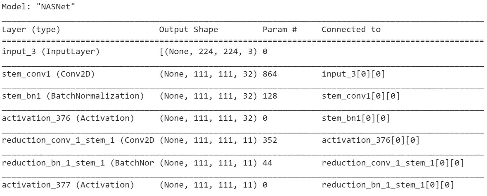图8.8:模型总结
- 使用
tf.keras.Sequential()创建一个新模型，将基础模型添加到Flatten和Dense层。将这个模型保存到一个名为model:model = tf.keras.Sequential([base_model,\ layers.Flatten(),\ layers.Dense(500, \ activation='relu'), \ layers.Dense(120, \ activation='softmax')])
的变量中 - 用
0.001作为学习率实例化一个tf.keras.optimizers.Adam()类，并保存到一个名为optimizer:optimizer = tf.keras.optimizers.Adam(0.001)
的变量中 - 使用
compile()方法编译神经网络，其中categorical_crossentropy为损失函数，Adam优化器的学习速率为0.001，而accuracy为要显示的度量:model.compile(loss='categorical_crossentropy', \ optimizer=optimizer, metrics=['accuracy'])
- Fit the neural networks with
fit()method. This model may take a few minutes to train:model.fit(train_data_gen, steps_per_epoch=len(features_train) // batch_size,\ epochs=5,\ validation_data=val_data_gen,\ validation_steps=len(features_test) // batch_size\ )预期产出如下:
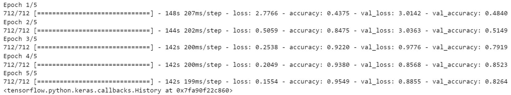
图8.9:训练模型的时期
在本练习中，您使用微调功能定制了一个NASNetMobile模型，该模型已在ImageNet上对包含水果图像的数据集进行了预训练。你冻结了这个模型的前700层，只训练了最后几层。您在训练集和测试集分别获得了0.9549和0.8264的准确度分数。
活动8.02:使用Tenso rFlow Hub进行迁移学习
解决方案:
- 打开新的Jupyter笔记本。
- 导入张量流库:
import tensorflow as tf
- 创建一个名为
file_url的变量，包含一个到数据集的链接:file_url = 'https://storage.googleapis.com'\ '/mledu-datasets/cats_and_dogs_filtered.zip'
- 使用带有
cats_and_dogs.zip、origin=file_url和extract=True作为参数的tf.keras.get_file下载数据集，并将结果保存到名为zip_dir:zip_dir = tf.keras.utils.get_file('cats_and_dogs.zip', \ origin=file_url, extract=True)的变量中 - 导入
pathlib库:import pathlib
- 使用
pathlib.Path(zip_dir).parent:path = pathlib.Path(zip_dir).parent / 'cats_and_dogs_filtered'
创建一个名为path的变量，包含到cats_and_dogs_filtered目录的完整路径 - 创建两个名为
train_dir和validation_dir的变量，它们采用train和validation文件夹的完整路径:train_dir = path / 'train' validation_dir = path / 'validation'
- 创建两个名为
total_train和total_val的变量，它们将获得训练集和验证集的图像数量(分别为2000和1000):total_train = 2000 total_val = 1000
- 从
tensorflow.keras.preprocessing:from tensorflow.keras.preprocessing.image import ImageDataGenerator
导入ImageDataGenerator - 实例化两个
ImageDataGenerator类，分别命名为train_image_generator和validation_image_generator。这些将通过除以255:train_image_generator = ImageDataGenerator(rescale=1./255) validation_image_generator = ImageDataGenerator(rescale=1./255)
来重新缩放图像 - 创建三个名为
batch_size、img_height和img_width的变量，分别取值为32、224和224:batch_size = 32 img_height = 224 img_width = 224
- 使用
flow_from_directory()创建一个名为train_data_gen的数据生成器，并指定批量大小、训练文件夹的路径、目标大小和课程模式:train_data_gen = train_image_generator.flow_from_directory\ (batch_size=batch_size, directory=train_dir, \ shuffle=True, target_size=(img_height, \ img_width), \ class_mode='binary')
- 使用
flow_from_directory()创建一个名为val_data_gen的数据生成器，并指定批处理大小、验证文件夹的路径、目标大小和类的模式:val_data_gen = validation_image_generator.flow_from_directory\ (batch_size=batch_size, \ directory=validation_dir, \ target_size=(img_height, img_width), \ class_mode='binary')
- 从
tensorflow.keras:import numpy as np import tensorflow as tf from tensorflow.keras import layers
导入numpy为np，导入tensorflow为tf，导入layers - 为numpy和tensorflow:
np.random.seed(8) tf.random.set_seed(8)
设置8(这完全是任意的)为seed - 导入
tensorflow_hub，如下图:import tensorflow_hub as hub
- 从TensorFlow Hub加载EfficientNet B0特征向量:
MODULE_HANDLE = 'https://tfhub.dev/google/efficientnet/b0'\ '/feature-vector/1' module = hub.load(MODULE_HANDLE)
- 创建一个新模型，将EfficientNet B0模块与两个新的顶层相结合，以
500和1为单位，以ReLu和sigmoid为激活函数:model = tf.keras.Sequential\ ([hub.KerasLayer(MODULE_HANDLE,\ input_shape=(224, 224, 3)), layers.Dense(500, activation='relu'), layers.Dense(1, activation='sigmoid')])
- 通过提供
binary_crossentropy作为loss函数、一个学习速率为0.001的Adam优化器和accuracy作为要显示的度量来编译这个模型:model.compile(loss='binary_crossentropy', \ optimizer=tf.keras.optimizers.Adam(0.001), \ metrics=['accuracy'])
- Fit the model and provide the train and validation data generators. Run it for five epochs:
model.fit(train_data_gen, \ steps_per_epoch = total_train // batch_size, \ epochs=5, \ validation_data=val_data_gen, \ validation_steps=total_val // batch_size)预期产出如下:
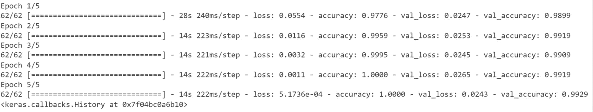
图8.10:模型训练输出
在本练习中，您使用TensorFlow Hub的迁移学习获得了非常高的准确度分数(训练集和测试集分别为1和0.99)。您使用了 EfficientNet B0 特征向量结合两个自定义最终层，您的最终模型几乎完美地预测了猫和狗的图像。
9。递归神经网络
活动9.01:使用多个LSTM图层构建一个RNN来预测功耗
解决方案:
执行以下步骤来完成本练习。
- 打开新的Jupyter或Colab笔记本。
- 导入所需的库。使用
numpy、pandas、datetime和MinMaxScaler在零和一之间缩放数据集:import numpy as np import pandas as pd import datetime from sklearn.preprocessing import MinMaxScaler
- 使用
read_csv()函数读入您的CSV文件并将您的数据集存储在pandas数据帧中，data:data = pd.read_csv("household_power_consumption.csv") - 使用下面的代码通过合并
Date和Time列创建一个新列Datetime:data['Date'] = pd.to_datetime(data['Date'], format="%d/%m/%Y") data['Datetime'] = data['Date'].dt.strftime('%Y-%m-%d') + ' ' \ + data['Time'] data['Datetime'] = pd.to_datetime(data['Datetime']) - 使用
Datetime列:data = data.sort_values(['Datetime'])
对数据帧进行升序排序 - 创建一个名为
num_cols的列表，其中包含具有数值的列—Global_active_power、Global_reactive_power、Voltage、Global_intensity、Sub_metering_1、Sub_metering_2和Sub_metering_3:num_cols = ['Global_active_power', 'Global_reactive_power', \ 'Voltage', 'Global_intensity', 'Sub_metering_1', \ 'Sub_metering_2', 'Sub_metering_3']
- 将
num_cols中列出的所有列转换为数字数据类型:for col in num_cols: data[col] = pd.to_numeric(data[col], errors='coerce')
- Call the
head()function on your data to take a look at the first five rows of your DataFrame:data.head()
您应该得到以下输出:
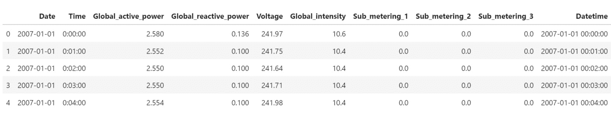图9.40:数据帧的前五行
- Call
tail()on your data to take a look at the last five rows of your DataFrame:data.tail()
您应该得到以下输出:
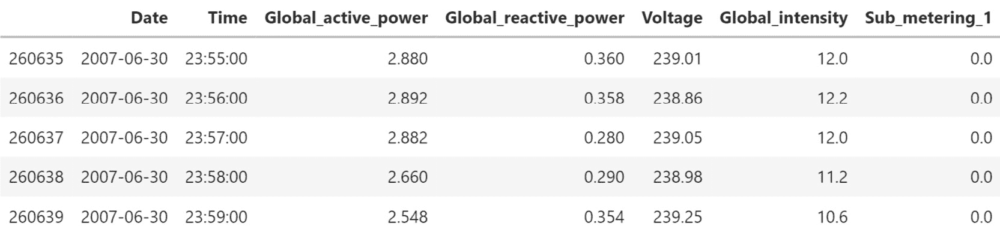图9.41:数据帧的最后五行
- 遍历
num_cols中的列，使用下面的代码用平均值填充缺失值:for col in num_cols: data[col].fillna(data[col].mean(), inplace=True)
- 使用
drop()从数据帧中删除Date、Time、Global_reactive_power和Datetime列，并将结果保存在名为df:df = data.drop(['Date', 'Time', 'Global_reactive_power', 'Datetime'], \ axis = 1)
的变量中 - Create a scaler from
MinMaxScalerto your DataFrame to numbers between zero and one. Usefit_transformto fit the model to the data and then transform the data according to the fitted model:scaler = MinMaxScaler() scaled_data = scaler.fit_transform(df) scaled_data
您应该得到以下输出:
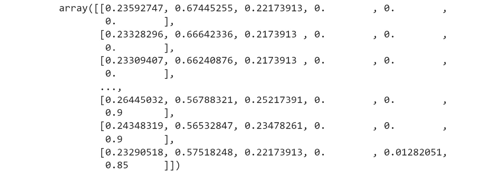图9.42:标准化培训数据
前面的屏幕截图显示数据已经标准化。值现在介于0和1之间。
- 创建两个名为
X和y的空列表，用于存储特性和目标变量:X = [] y = []
- 创建具有前60分钟功耗的训练数据集，以便可以预测下一分钟的值。使用
for循环在60个时间步长内创建数据:for i in range(60, scaled_data.shape[0]): X.append(scaled_data [i-60:i]) y.append(scaled_data [i, 0])
- 将
X和y转换为NumPy数组，为训练您的模型做准备:X, y = np.array(X), np.array(y)
- 将数据集分成训练集和测试集，分别包含索引
217440前后的数据:X_train = X[:217440] y_train = y[:217440] X_test = X[217440:] y_test = y[217440:]
- 你将需要一些额外的图书馆来建造LSTM。使用
Sequential初始化神经网络，Dense添加一个密集层，LSTM添加一个LSTM层，Dropout帮助防止过拟合:from tensorflow.keras import Sequential from tensorflow.keras.layers import Dense, LSTM, Dropout
- 初始化你的神经网络。用
20、40和80单位添加LSTM图层。使用ReLU激活功能并将return_sequences设置为True。input_shape应该是你训练集的维度(特性数和天数)。最后，添加你的辍学层:regressor = Sequential() regressor.add(LSTM(units= 20, activation = 'relu',\ return_sequences = True,\ input_shape = (X_train.shape[1], X_train.shape[2]))) regressor.add(Dropout(0.5)) regressor.add(LSTM(units= 40, \ activation = 'relu', \ return_sequences = True)) regressor.add(Dropout(0.5)) regressor.add(LSTM(units= 80, \ activation = 'relu')) regressor.add(Dropout(0.5)) regressor.add(Dense(units = 1))
- Print the architecture of the model using the
summary()function:regressor.summary()
前面的命令提供了关于模型、层和参数的有价值的信息:
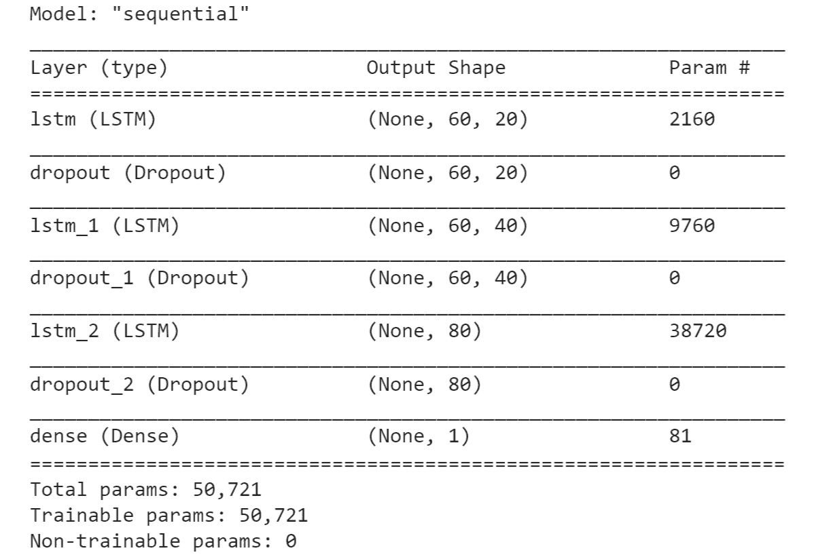图9.43:模型总结
- 使用
compile()方法配置您的模型进行训练。选择Adam作为您的优化器，并使用均方差来衡量您的损失函数:regressor.compile(optimizer='adam', loss = 'mean_squared_error')
- 适合您的模型，并将其设置为在两个时期运行。将批量设置为
32:regressor.fit(X_train, y_train, epochs=2, batch_size=32)
- 使用
regressor.predict(X_test):y_pred = regressor.predict(X_test)
将测试集上的预测保存在名为y_pred的变量中 - Take a look at the real household power consumption and your predictions for the last hour of data from your test set:
plt.figure(figsize=(14,5)) plt.plot(y_test[-60:], color = 'black', \ label = "Real Power Consumption") plt.plot(y_pred[-60:], color = 'gray', \ label = 'Predicted Power Consumption') plt.title('Power Consumption Prediction') plt.xlabel('time') plt.ylabel('Power Consumption') plt.legend() plt.show()您应该得到以下输出:
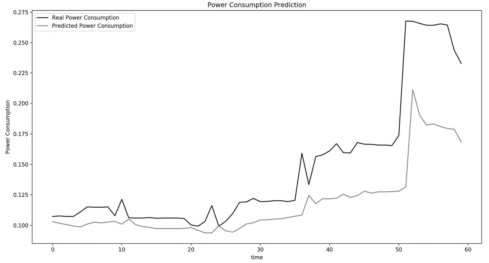
图9.44:家庭用电量预测可视化
正如你在图9.44 中看到的，你的结果相当不错。您可以观察到，在大多数情况下，您的预测值接近实际值。
活动9.02:构建预测推文情感的RNN
解决方案:
执行以下步骤来完成本练习:
- 打开新的Jupyter或Colab笔记本。
- 导入所需的库。使用
numpy进行计算，使用pandas处理数据集:import numpy as np import pandas as pd
- 使用
read_csv方法读入您的CSV文件，并将您的数据集存储在pandas DataFrame中，data:data = pd.read_csv("https://raw.githubusercontent.com"\ "/PacktWorkshops/The-TensorFlow-Workshop"\ "/master/Chapter09/Datasets/tweets.csv") - Call the
head()method on your data to take a look at the first five rows of your DataFrame:data.head()
您应该得到以下输出:
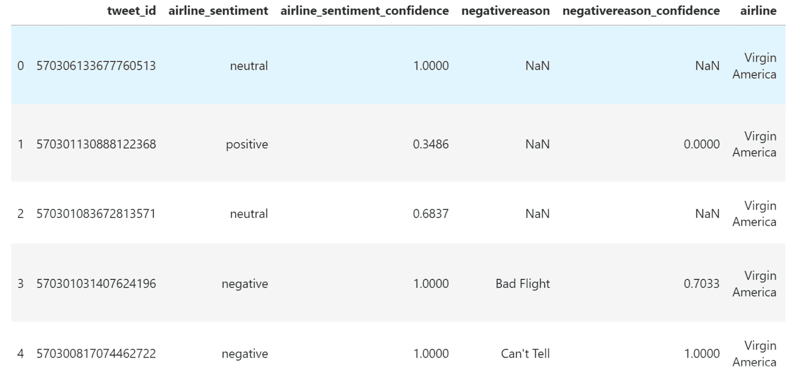图9.45:数据帧的前五行
在前面的截图中，您可以看到存储在
airline_sentiment列中的不同情绪。 - Call
tail()on your data to take a look at the last five rows of your DataFrame:data.tail()您应该得到以下输出:
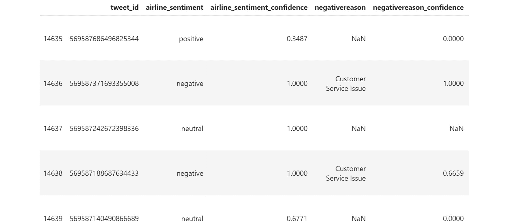图9.46:数据帧的最后五行
- 创建一个名为
df的新数据框架，它将只有text作为特征，而airline_sentiment作为目标变量:df = data[['text','airline_sentiment']]
- 子集
df通过使用以下命令删除airline_sentiment等于neutral的所有行:df = df[df['airline_sentiment'] != 'neutral']
- 通过将
negative替换为0并将positive替换为1，将airline_sentiment列转换为数字类型。将结果保存到变量中，y:y = df['airline_sentiment'].map({'negative':0, 'positive':1}).values - 创建一个变量
X，它将包含来自df:X = df['text']
中文本列的数据 - 从
tensorflow.keras.preprocessing.text导入Tokenizer，从tensorflow.keras.preprocessing.sequence导入pad_sequences:from tensorflow.keras.preprocessing.text import Tokenizer from tensorflow.keras.preprocessing.sequence \ import pad_sequences
- 实例化一个
num_words等于10000的Tokenizer()类。这将只保留前10，000个最常用的单词。将其保存到变量中，tokenizer:tokenizer = Tokenizer(num_words=10000)
- 在数据
X:tokenizer.fit_on_texts(X)
上安装tokenizer - Print the vocabulary from
tokenizer:tokenizer.word_index
您应该得到如下输出:
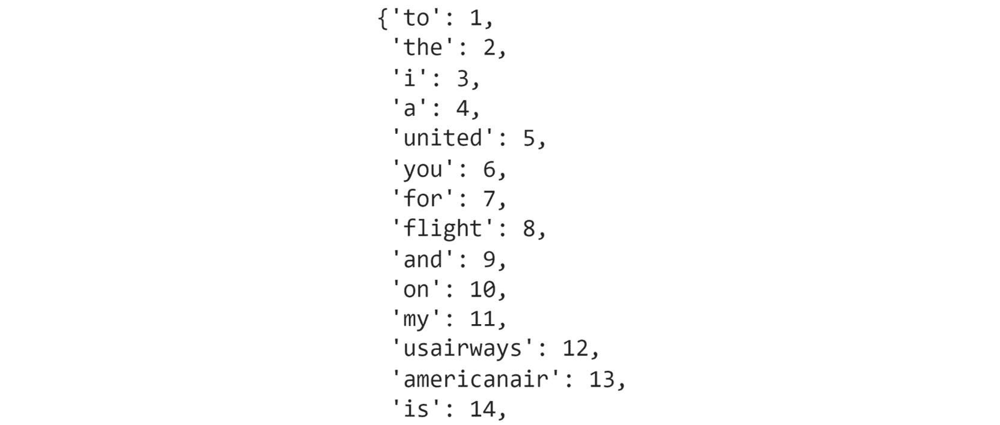图9.47:由记号赋予器定义的词汇
从输出词汇表中，您可以看到单词
to被分配了索引1,the被分配了2，以此类推。您可以使用它将原始文本映射为数字版本。 - 创建
vocab_size变量，包含记号赋予器词汇表的长度和一个用于未知单词的额外字符:vocab_size = len(tokenizer.word_index) + 1
- 使用
tokenizer中的词汇将X中的原始文本转换成编码版本。将结果保存在名为encoded_tweets:encoded_tweets = tokenizer.texts_to_sequences(X)
的变量中 - 以
0结尾填充encoded_tweets，最多280个字符。将结果保存在名为padded_tweets:padded_tweets = pad_sequences(encoded_tweets, maxlen=280, padding='post')
的变量中 - Print the shape of
padded_tweets:padded_tweets.shape
您应该会得到以下结果:
(11541, 280)
- 正如你所看到的，准备好的推文现在都有相同的长度，即280个字符。
- 随机排列
padded_tweets的索引。将结果保存在indices变量中:indices = np.random.permutation(padded_tweets.shape[0])
- 创建两个变量
train_idx和test_idx，分别包含前10000个指数和其余的指数:train_idx = indices[:10000] test_idx = indices[10000:]
- 使用
padded_tweets和y，将数据分成训练集和测试集。将它们保存到四个不同的变量中，分别叫做X_train、X_test、y_train和y_test:X_train = padded_tweets[train_idx,] X_test = padded_tweets[test_idx,] y_train = y[train_idx,] y_test = y[test_idx,]
- 您将需要一些额外的库来构建您的模型。使用以下代码导入
Sequential、Dense、LSTM、Dropout和Embedding:from tensorflow.keras import Sequential from tensorflow.keras.layers import Dense, LSTM, Dropout, Embedding
- 初始化你的神经网络。通过提供词汇表的长度、嵌入层的长度和输入长度来添加嵌入层。用
50和100单元添加两个LSTM层。使用ReLU激活功能并将return_sequences设置为True。然后，为每个LSTM添加一个落差为20%的落差图层。最后，添加一个全连接层，以sigmoid作为最终激活函数:model = Sequential() model.add(Embedding(vocab_size, embedding_vector_length, input_length=280)) model.add(LSTM(units= 50, activation = 'relu', return_sequences = True)) model.add(Dropout(0.2)) model.add(LSTM(100, activation = 'relu')) model.add(Dropout(0.2)) model.add(Dense(1, activation='sigmoid'))
- Check the summary of the model using the
summary()function:model.summary()
您应该得到以下输出:
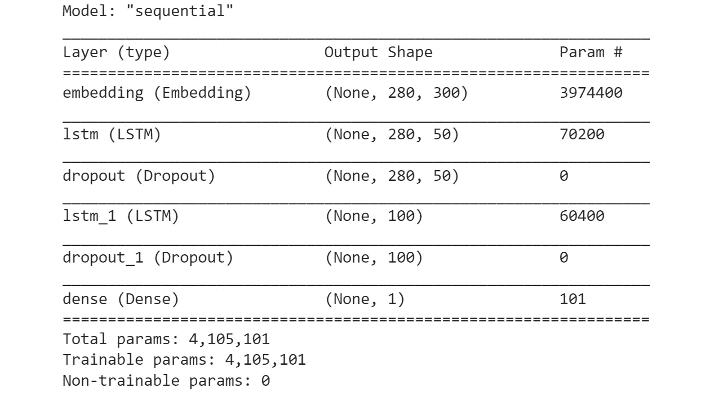图9.48:模型总结
- 使用
compile()方法来配置你的模型进行训练。选择adam作为您的优化器，binary_crossentropy测量您的损失函数，选择accuracy作为要显示的指标:model.compile(optimizer='adam', loss='binary_crossentropy', metrics=['accuracy'])
- Fit your model and set it to run on two epochs. Set your batch size to
32:model.fit(X_train, y_train, epochs=2, batch_size=32)
您应该得到以下输出:
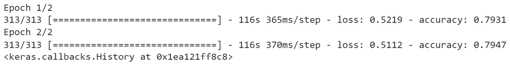
图9。49:训练模型
正如您在图9.49 中看到的，您的模型在训练集上以最少的数据准备获得了0.7978的准确度。你可以尝试通过删除停用词或极其频繁的词来改善这一点，例如the和a，这些词并不能真正帮助评估一条推文的情感，看看你是否可以在测试集上实现相同的性能。您可以推断出，该模型可以正确预测训练数据中几乎80%的推文情感。
10。自定义TensorFlow组件
活动10.01:使用自定义图层和自定义损失函数构建模型
解决方案:
首先，打开一个新的Colab或Jupyter笔记本。如果您正在使用Google Colab，您需要首先将数据集下载到您的Google Drive中:
- 打开新的Jupyter笔记本或Google Colab笔记本。
- 如果您正在使用Google Colab，您可以使用以下代码在本地上传您的数据集。否则，转到步骤4 。点击
Choose Files导航至CSV文件，然后点击Open。将文件另存为uploaded。然后，转到保存数据集的文件夹:from google.colab import files uploaded = files.upload()
- 将数据集解压到当前文件夹:
!unzip \*.zip
- 创建一个变量
directory，它包含数据集的路径:directory = "/content/gdrive/My Drive/Datasets/pneumonia-or-healthy/"
- 导入所有需要的库:
import numpy as np import pandas as pd import pathlib import os import matplotlib.pyplot as plt from keras.models import Sequential from keras import optimizers from tensorflow.keras.preprocessing.image import ImageDataGenerator import tensorflow as tf from tensorflow.keras.layers import Input, Conv2D, ReLU, \ BatchNormalization,Add, AveragePooling2D, Flatten, Dense from tensorflow.keras.models import Model
- 使用
pathlib.Path:path = pathlib.Path(directory)
创建一个包含数据完整路径的变量path - 创建两个名为
train_dir和validation_dir的变量，它们分别获取训练和验证文件夹的完整路径:train_dir = path / 'training_set' validation_dir = path / 'test_set'
- 创建四个名为
train_table_dir、train_glass_dir、validation_table_dir和validation_glass_dir的变量，它们分别采用训练集和验证集的玻璃和表格文件夹的完整路径:train_table_dir = train_dir / 'table' train_glass_dir = train_dir /'glass' validation_table_dir = validation_dir / 'table' validation_glass_dir = validation_dir / 'glass'
- 为训练集和验证集创建包含眼镜和桌子图像数量的四个变量:
num_train_table = len([f for f in os.listdir(train_table_dir)if \ os.path.isfile(os.path.join\ (train_table_dir, f))]) num_train_glass = len([f for f in os.listdir(train_glass_dir)if \ os.path.isfile(os.path.join\ (train_glass_dir, f))]) num_validation_table = len([f for f in os.listdir\ (validation_table_dir)if os.path.isfile(os.path.join(validation_table_dir, f))]) num_validation_glass = len([f for f in os.listdir\ (validation_glass_dir)if \ os.path.isfile\ (os.path.join\ (validation_glass_dir, f))])
- Display a bar chart with the total number of images of glasses and tables:
plt.bar(['table', 'glass'], \ [num_train_table + num_validation_table, \ num_train_glass + num_validation_glass], \ align='center', \ alpha=0.5) plt.show()您应该得到以下输出:
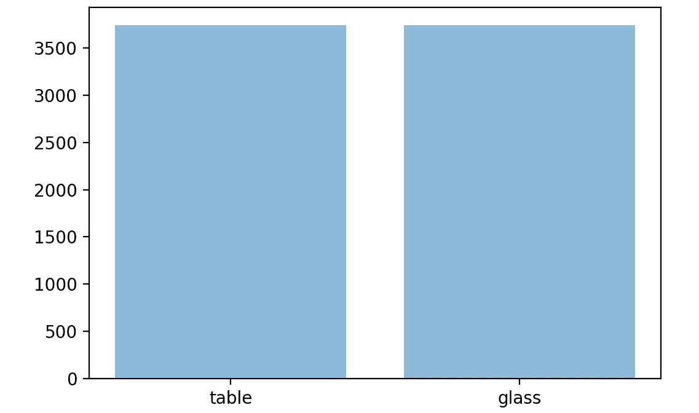图10.12:眼镜和桌子的图像数量
前面的图表向您展示了数据集的良好平衡。眼镜的图像几乎和桌子一样多，每张大约有3500个图像。
- 创建两个名为
total_train和total_val的变量，分别获取训练集和验证集的图像数量:total_train = len(os.listdir(train_table_dir)) + \ len(os.listdir(validation_table_dir)) total_val = len(os.listdir(train_glass_dir)) + \ len(os.listdir(validation_glass_dir))
- 导入
ImageDataGenerator类:from tensorflow.keras.preprocessing.image \ import ImageDataGenerator
- 实例化两个
ImageDataGenerator类train_image_generator和validation_image_generator，它们将通过除以255来重新缩放图像:train_image_generator = ImageDataGenerator(rescale=1./255) validation_image_generator = ImageDataGenerator(rescale=1./255)
- 创建三个名为
batch_size、img_height和img_width的变量，分别取值为32、100和100:batch_size = 32 img_height = 100 img_width = 100
- 使用
flow_from_directory()方法创建一个名为train_data_gen的数据生成器，并指定批处理大小、训练文件夹的路径、shuffle参数的值、目标的大小和课程模式:train_data_gen = train_image_generator.flow_from_directory\ (batch_size=batch_size, directory=train_dir, \ shuffle=True, \ target_size=(img_height, img_width), \ class_mode='binary')
- 使用
flow_from_directory()方法创建一个名为val_data_gen的数据生成器，并指定批处理大小、验证文件夹的路径、目标的大小和类模式:val_data_gen = validation_image_generator.flow_from_directory\ (batch_size=batch_size, directory=validation_dir,\ target_size=(img_height, img_width), \ class_mode='binary')
- 创建您的自定义损失函数。在这种情况下，使用
def并为您的自定义损失选择一个名称custom_loss_function。然后，加上你的两个参数，y_true和y_pred。现在，创建一个变量squared_difference，来存储y_true减去y_pred的平方。最后，使用squared_difference:def custom_loss_function(y_true, y_pred): squared_difference = tf.square(float(y_true) - float(y_pred)) return tf.reduce_mean(squared_difference, axis=-1)
中的tf.reduce_mean返回计算的损失 - 构建一个函数，将您的输入作为一个张量，并添加ReLU和批量标准化:
def relu_batchnorm_layer(input): return BatchNormalization()(ReLU()(input))
- Create a function to build the residual block. You will need to take a tensor as your input and pass it to two Conv2D layers. Next, add the input to the output, followed by ReLU and batch normalization.
由于您在
residual_block中为跳过连接使用了Add层，您需要确保它的输入总是相同的形状。downsample参数用于指定第一个Conv2D层的跨度。如果True则指定strides=2，如果False则指定strides=1。当strides=1时，输出(int_output)与输入大小相同。但是当strides=2时，int_ouput的尺寸减半。考虑到这一点，将带有kernel_size=1的Conv2D层添加到跳过连接:def residual_block(input, downsample: bool, filters: int, \ kernel_size: int = 3): int_output = Conv2D(filters=filters, kernel_size=kernel_size, strides= (1 if not downsample else 2), padding="same")(input) int_output = relu_batchnorm_layer(int_output) int_output = Conv2D(filters=filters, kernel_size=kernel_size, padding="same")(int_output) if downsample: int_output2 = Conv2D(filters=filters, kernel_size=1, strides=2, padding="same")(input) output = Add()([int_output2, int_output]) else: output = Add()([input, int_output]) output = relu_batchnorm_layer(output) return output - 现在，使用
keras.layers.Input()层来定义你的模型的输入层。这里，你的形状是100像素乘100像素，有三种颜色(RGB)。然后，用您的定制架构创建您的模型。最后，用model = Model (inputs, outputs):inputs = Input(shape=(100, 100, 3)) num_filters = 32 t = BatchNormalization()(inputs) t = Conv2D(kernel_size=3, strides=1, filters=32, padding="same")(t) t = relu_batchnorm_layer(t) num_blocks_list = [1, 3, 5, 6, 1] for i in range(len(num_blocks_list)): num_blocks = num_blocks_list[i] for j in range(num_blocks): t = residual_block(t, downsample=(j==0 and i!=0), filters=num_filters) num_filters *= 2 t = AveragePooling2D(4)(t) t = Flatten()(t) outputs = Dense(1, activation='sigmoid')(t) model = Model(inputs, outputs)
引用你的输入和输出张量 - Get a summary of your model:
model.summary()
运行前面的命令时将显示摘要:
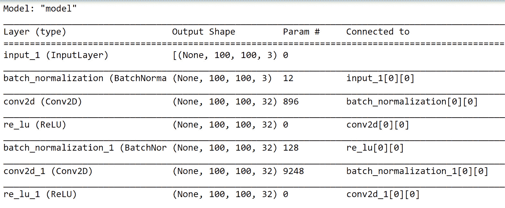图10.13:模型摘要
- 通过提供您的自定义损失函数来编译此模型，使用Adam作为优化器，准确性作为要显示的度量:
model.compile( optimizer='adam', loss=custom_loss_function, metrics=['accuracy'] )
- Fit the model and provide the train and validation data generators, the number of epochs, the steps per epoch, and the validation steps:
history = model.fit( Train_data_gen, steps_per_epoch=total_train // batch_size, epochs=5, validation_data=val_data_gen, validation_steps=total_val // batch_size )您应该得到以下输出:
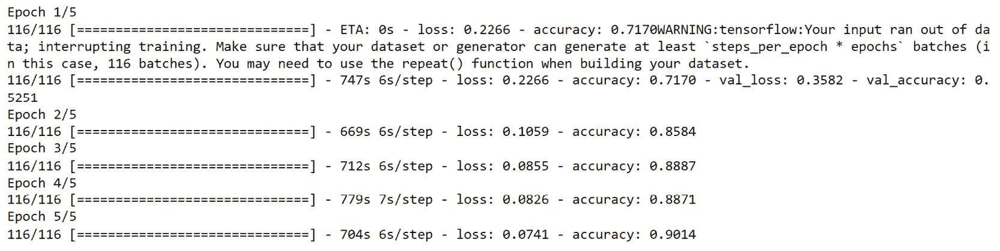图10.14:培训进度截图
前面的屏幕截图显示了TensorFlow在模型训练期间显示的信息。您可以看到每个时期的训练集和验证集所达到的精确度。在第五个时期，模型在训练集上是
85.9%准确的，在验证集上是88.5%准确的。 - Plot your training and validation accuracy:
plt.plot(history.history['accuracy']) plt.plot(history.history['val_accuracy']) plt.title('Training Accuracy vs Validation Accuracy') plt.ylabel('Accuracy') plt.xlabel('Epoch') plt.legend(['Train', 'Validation'], loc='upper left') plt.show()您应该得到以下输出:
图10.15:培训和验证准确性
上图显示了每个时期的训练集和验证集的准确度分数。
- Plot your training and validation loss:
plt.plot(history.history['loss']) plt.plot(history.history['val_loss']) plt.title('Training Loss vs Validation Loss') plt.ylabel('Loss') plt.xlabel('Epoch') plt.legend(['Train', 'Validation'], loc='upper left') plt.show()您应该得到以下输出:
图10.16:培训和验证损失
上图显示了每个时期的训练集和验证集的损失分数。
通过此活动，您已经成功构建了自定义MSE损失函数和自定义残差块图层，并在玻璃与桌子数据集上训练了此自定义深度学习模型。你现在知道如何超越TensorFlow提供的默认课程，建立自己的定制深度学习模型。
11。生成模型
活动11.01:使用GANs生成图像
解决方案:
执行以下步骤来完成本练习:
- Load Google Colab and Google Drive:
try: from google.colab import drive drive.mount('/content/drive', force_remount=True) COLAB = True print("Note: using Google CoLab") %tensorflow_version 2.x except: print("Note: not using Google CoLab") COLAB = False您的输出应该如下所示:
Mounted at /content/drive Note: using Google CoLab
- 导入将要使用的库:
import tensorflow as tf from tensorflow.keras.models import Sequential, Model, load_model from tensorflow.keras.layers import InputLayer, Reshape, Dropout, Dense from tensorflow.keras.layers import Flatten, BatchNormalization from tensorflow.keras.layers import UpSampling2D, Conv2D from tensorflow.keras.layers import Activation, ZeroPadding2D from tensorflow.keras.optimizers import Adam from tensorflow.keras.layers import LeakyReLU import zipfile import matplotlib.pyplot as plt import numpy as np from PIL import Image from tqdm import tqdm import os import time from skimage.io import imread
- 创建一个函数来格式化一个时间字符串来跟踪你的时间使用:
def time_string(sec_elapsed): hour = int(sec_elapsed / (60 * 60)) minute = int((sec_elapsed % (60 * 60)) / 60) second = sec_elapsed % 60 return "{}:{:>02}:{:>05.2f}".format(hour, minute, second) - Set the generation resolution to
3. Also, setimg_rowsandimg_colsto5andimg_marginto16so that your preview images will be a5x5array (25 images) with a 16-pixel margin. Setseed_vectorequal to200,data_pathto where you stored your image dataset, andepochsto500. Finally, print the parameters:gen_res = 3 gen_square = 32 * gen_res img_chan = 3 img_rows = 5 img_cols = 5 img_margin = 16 seed_vector = 200 data_path = 'banana-or-orange/training_set/' epochs = 500 num_batch = 32 num_buffer = 60000 print(f"Will generate a resolution of {gen_res}.") print(f"Will generate {gen_square}px square images.") print(f"Will generate {img_chan} image channels.") print(f"Will generate {img_rows} preview rows.") print(f"Will generate {img_cols} preview columns.") print(f"Our preview margin equals {img_margin}.") print(f"Our data path is: {data_path}.") print(f"Our number of epochs are: {epochs}.") print(f"Will generate a batch size of {num_batch}.") print(f"Will generate a buffer size of {num_buffer}.")您的输出应该如下所示:
图11.30:显示参数的输出
- 如果NumPy预处理文件存在于之前的执行中，则将它加载到内存中；否则，对数据进行预处理，保存图像二进制:
training_binary_path = os.path.join(data_path, f'training_data_{gen_square}_{gen_square}.npy') print(f"Looking for file: {training_binary_path}") if not os.path.isfile(training_binary_path): start = time.time() print("Loading training images…") train_data = [] images_path = os.path.join(data_path,'banana') for filename in tqdm(os.listdir(images_path)): path = os.path.join(images_path,filename) images = Image.open(path).resize((gen_square, gen_square),\ Image.ANTIALIAS) train_data.append(np.asarray(images)) train_data = np.reshape(train_data,(-1,gen_square, gen_square,img_chan)) train_data = train_data.astype(np.float32) train_data = train_data / 127–5 - 1. print("Saving training image binary...") np.save(training_binary_path,train_data) elapsed = time.time()-start print (f'Image preprocess time: {time_string(elapsed)}') else: print("Loading training data...") train_data = np.load(training_binary_path) - 对数据进行批处理和洗牌。使用
tensorflow.data.Dataset对象库，使用其函数混洗数据集并创建批处理:train_dataset = tf.data.Dataset.from_tensor_slices(train_data) \ .shuffle(num_buffer).batch(num_batch)
- 为DCGAN建造发电机:
def create_dc_generator(seed_size, channels): model = Sequential() model.add(Dense(4*4*256,activation="relu",input_dim=seed_size)) model.add(Reshape((4,4,256))) model.add(UpSampling2D()) model.add(Conv2D(256,kernel_size=3,padding="same")) model.add(BatchNormalization(momentum=0.8)) model.add(Activation("relu")) model.add(UpSampling2D()) model.add(Conv2D(256,kernel_size=3,padding="same")) model.add(BatchNormalization(momentum=0.8)) model.add(Activation("relu")) # Output resolution, additional upsampling model.add(UpSampling2D()) model.add(Conv2D(128,kernel_size=3,padding="same")) model.add(BatchNormalization(momentum=0.8)) model.add(Activation("relu")) if gen_res>1: model.add(UpSampling2D(size=(gen_res,gen_res))) model.add(Conv2D(128,kernel_size=3,padding="same")) model.add(BatchNormalization(momentum=0.8)) model.add(Activation("relu")) # Final CNN layer model.add(Conv2D(channels,kernel_size=3,padding="same")) model.add(Activation("tanh")) return model - 为DCGAN构建鉴别器:
def create_dc_discriminator(image_shape): model = Sequential() model.add(Conv2D(32, kernel_size=3, strides=2, \ input_shape=image_shape, padding="same")) model.add(LeakyReLU(alpha=0.2)) model.add(Dropout(0.25)) model.add(Conv2D(64, kernel_size=3, strides=2, padding="same")) model.add(ZeroPadding2D(padding=((0,1),(0,1)))) model.add(BatchNormalization(momentum=0.8)) model.add(LeakyReLU(alpha=0.2)) model.add(Dropout(0.25)) model.add(Conv2D(128, kernel_size=3, strides=2, padding="same")) model.add(BatchNormalization(momentum=0.8)) model.add(LeakyReLU(alpha=0.2)) model.add(Dropout(0.25)) model.add(Conv2D(256, kernel_size=3, strides=1, padding="same")) model.add(BatchNormalization(momentum=0.8)) model.add(LeakyReLU(alpha=0.2)) model.add(Dropout(0.25)) model.add(Conv2D(512, kernel_size=3, strides=1, padding="same")) model.add(BatchNormalization(momentum=0.8)) model.add(LeakyReLU(alpha=0.2)) model.add(Dropout(0.25)) model.add(Flatten()) model.add(Dense(1, activation='sigmoid')) return model
- 为香草甘建造发电机:
def create_generator(seed_size, channels): model = Sequential() model.add(Dense(96*96*3,activation="tanh",input_dim=seed_size)) model.add(Reshape((96,96,3))) return model
- 构建香草甘的鉴别器:
def create_discriminator(img_size): model = Sequential() model.add(InputLayer(input_shape=img_size)) model.add(Dense(1024, activation="tanh")) model.add(Flatten()) model.add(Dense(1, activation='sigmoid')) return model
- 创建一个函数来生成并保存图像，这些图像可用于查看模型训练过程中的进度:
def save_images(generator, cnt, noise, prefix=None): img_array = np.full(( img_margin + (img_rows * (gen_square+img_margin)), img_margin + (img_cols * (gen_square+img_margin)), 3), 255, dtype=np.uint8) gen_imgs = generator.predict(noise) gen_imgs = 0.5 * gen_imgs + 0.5 img_count = 0 for row in range(img_rows): for col in range(img_cols): r = row * (gen_square+16) + img_margin c = col * (gen_square+16) + img_margin img_array[r:r+gen_square,c:c+gen_square] \ = gen_imgs[img_count] * 255 img_count += 1 output_path = os.path.join(data_path,'output') if not os.path.exists(output_path): os.makedirs(output_path) filename = os.path.join(output_path,f"train{prefix}-{cnt}.png") im = Image.fromarray(img_array) im.save(filename) - Initialize the generator for the DCGAN and view the output:
dc_generator = create_dc_generator(seed_vector, img_chan) noise = tf.random.normal([1, seed_vector]) gen_img = dc_generator(noise, training=False) plt.imshow(gen_img[0, :, :, 0])
您的输出应该如下所示:
图11.31:显示DCGAN发生器噪声的输出
- Initialize the generator for the vanilla GAN and view the output:
generator = create_generator(seed_vector, img_chan) gen_van_img = generator(noise, training=False) plt.imshow(gen_van_img[0, :, :, 0])
您应该得到以下输出:
图11.32:显示普通GAN发生器噪声的输出
- Print the decision of the DCGAN discriminator evaluated on the seed image:
img_shape = (gen_square,gen_square,img_chan) discriminator = create_discriminator(img_shape) decision = discriminator(gen_img) print (decision)
您的输出应该如下所示:
tf.Tensor([[0.4994658]], shape=(1,1), dtype=float32)
- Print the decision of the vanilla GAN evaluated on the seed image:
discriminator = create_discriminator(img_shape) decision = discriminator(gen_img) print(decision)
您的输出应该如下所示:
tf.Tensor([[0.5055983]], shape=(1,1), dtype=float32)
- 创建你的损失函数。由于鉴频器和发生器网络的输出是不同的，因此可以为它们定义两个独立的损失函数。此外，他们需要通过网络在独立通道中单独接受培训。两个gan可以利用相同的损失函数作为它们的鉴别器和发生器。可以用
tf.keras.losses.BinaryCrossentropy代替cross_entropy。这将计算真实标签和预测标签之间的损失。然后，使用tf.ones和tf.zeros从real_output和fake_output定义discrim_loss函数来计算total_loss:cross_entropy = tf.keras.losses.BinaryCrossentropy() def discrim_loss(real_output, fake_output): real_loss = cross_entropy(tf.ones_like(real_output), real_output) fake_loss = cross_entropy(tf.zeros_like(fake_output), fake_output) total_loss = real_loss + fake_loss return total_loss def gen_loss(fake_output): return cross_entropy(tf.ones_like(fake_output), fake_output)
- Create two Adam optimizers, one for the generator and one for the discriminator. Use the same learning rate and momentum for each:
gen_optimizer = tf.keras.optimizers.Adam(1.5e-4,0.5) disc_optimizer = tf.keras.optimizers.Adam(1.5e-4,0.5)
在这里，你有你的个人训练步骤。一次只能修改一个网络的权重，这一点非常重要。使用
tf.GradientTape()，您可以同时训练鉴别器和发生器，但彼此分开。TensorFlow就是这么做自动微分的。它计算导数。您会看到它创建了两个“磁带”—gen_tape和disc_tape。把这些想象成每个计算的记录。 - 为鉴别器创建
real_output和fake_output。将此用于发电机损耗(g_loss)。然后，用gradients_of_generator和gradients_of_discriminator计算鉴频器损耗(d_loss)以及发生器和鉴频器的梯度，并应用它们。将这些步骤封装在一个函数中，传入发生器、鉴别器和图像，并返回发生器损耗(g_loss)和鉴别器损耗(d_loss):@tf.function def train_step(generator, discriminator, images): seed = tf.random.normal([num_batch, seed_vector]) with tf.GradientTape() as gen_tape, \ tf.GradientTape() as disc_tape: gen_imgs = generator(seed, training=True) real_output = discriminator(images, training=True) fake_output = discriminator(gen_imgs, training=True) g_loss = gen_loss(fake_output) d_loss = discrim_loss(real_output, fake_output) gradients_of_generator = gen_tape.gradient(\ g_loss, generator.trainable_variables) gradients_of_discriminator = disc_tape.gradient(\ d_loss, discriminator.trainable_variables) gen_optimizer.apply_gradients(zip( gradients_of_generator, generator.trainable_variables)) disc_optimizer.apply_gradients(zip( gradients_of_discriminator, discriminator.trainable_variables)) return g_loss,d_loss
- 使用与要显示的图像数量相等的
fixed_seeds创建多个固定种子，以便您可以跟踪相同的图像。这可以让你看到单个种子如何随着时间的推移而进化，用for epoch in range追踪你的时间。现在，用for image_batch in dataset循环每个批次。用generator_loss和discriminator_loss继续跟踪发电机和鉴频器的损耗。现在，在训练过程中，您可以很好地显示所有这些信息:def train(generator, discriminator, dataset, epochs, prefix=None): fixed_seed = np.random.normal(0, 1, (img_rows * img_cols, seed_vector)) start = time.time() for epoch in range(epochs): epoch_start = time.time() g_loss_list = [] d_loss_list = [] for image_batch in dataset: t = train_step(image_batch) g_loss_list.append(t[0]) d_loss_list.append(t[1]) generator_loss = sum(g_loss_list) / len(g_loss_list) discriminator_loss = sum(d_loss_list) / len(d_loss_list) epoch_elapsed = time.time() - epoch_start if (epoch + 1) % 100 == 0: print (f'Epoch {epoch+1}, gen loss={generator_loss}, disc loss={discriminator_loss},'\ f' {time_string(epoch_elapsed)}') save_images(epoch,fixed_seed) elapsed = time.time()-start print (f'Training time: {time_string(elapsed)}') - Train the DCGAN model on your training dataset:
train(dc_generator, dc_discriminator, train_dataset, \ epochs, prefix='-dc-gan')您的输出应该如下所示:
图11.33:DCGAN模型训练期间的输出
输出显示了发生器和鉴频器在每个时期的损耗。
- Train the vanilla model on your training dataset:
train(generator, discriminator, train_dataset, epochs, \ prefix='-vanilla')您的输出应该如下所示:
图11.34:普通GAN模型训练期间的输出
- View your images generated by the DCGAN model after the 100th epoch:
a = imread('banana-or-orange/training_set/output'\ '/train-dc-gan-99.png') plt.imshow(a)您将得到如下输出:
图11.35:100个时期后DCGAN模型的输出图像
- View your images generated by the DCGAN model after the 500th epoch:
a = imread('/ banana-or-orange/training_set'\ '/output/train-dc-gan-499.png') plt.imshow(a)您将得到如下输出:
图11.36:500个时期后DCGAN模型的输出图像
- View your images generated by the vanilla GAN model after the 100th epoch:
a = imread('banana-or-orange/training_set'\ '/output/train-vanilla-99.png') plt.imshow(a)您将得到如下输出:
图11.37:100个时期后普通GAN模型的输出图像
- View your images generated by the vanilla GAN model after the 500th epoch:
a = imread('/ banana-or-orange/training_set'\ '/output/train-vanilla-499.png') plt.imshow(a)您将得到如下输出:
图11.38:500个时期后普通GAN模型的输出图像
输出显示了500个时期后由vanilla GAN生成的图像。您可以看到它们与DCGAN生成的非常不同。
你刚刚完成了这本书的最后一项活动。您使用DCGAN创建了自己的映像，并将其与普通GAN模型进行了比较。从图11.36 和图11.38 中可以看出，结果与DCGAN模型的结果非常不同，后者可以清楚地识别为具有不同变化和方向的香蕉状。使用该模型，尽管一些图像比其他图像更像香蕉，但所有图像都至少显示出一些可识别的香蕉特征，如颜色、形状和黑尖的存在。然而，来自普通GAN模型的结果看起来更像训练数据集的像素平均值，这总体上不是现实生活中香蕉的良好表示。所有图像似乎都具有相同的方向，这可能是结果更像训练数据的像素平均值的另一个指标。